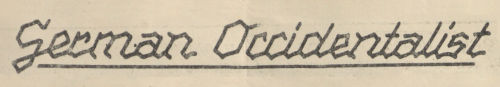
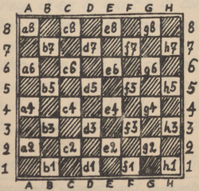

Benevenit!
Ci vu trova li numerós 1 til 36 (sin 4, 10, 11, 12) del revúe German Occidentalist, editet in li annus 1930 del German Occidental-Federation (Deutscher Occidental-Sprachbund).
Li federation inviat it al membres por informar pri su activitá, ma it contenet anc altri articules pri divers temas. Li activitá del federation, quel havet 24 membres, esset prohibit del guvernament national-socialistic in junio 1936.
Remarcas:
- Li textu de omni numerós es traserchabil per cliccar li lupe-simbol in supra a levul.
- Li simboles in li menú a levul indica li lingue(s) in quel(es) chascun numeró es scrit.
- Vu posse vider li originales in forme de images digital sur li websitu del Biblioteca National de Austria (1933, 1934–35).
Zu Zwecken von Wissenschaft, Forschung und staatsbürgerlicher Aufklärung über die Weltsprachebewegung stellen diese Seiten Texte aus der Zeit des Nationalsozialismus zur Verfügung. Die Ersteller der Seiten distanzieren sich ausdrücklich von allen Inhalten, die nationalsozialistische Anschauungen, Ziele oder Organisationen bewerben, rechtfertigen, verherrlichen oder verharmlosen.
German Occidentalist
№ 1. 1933.
Mitteilungsblatt des Deutschen Occidental-Bundes, Berlin-Bernau.
Berlin-Bernau, Januar 1933.
Rundschreiben an alle Mitglieder und Freunde des Bundes.
Der Deutsche Occidental-Bund (German Occidental-Federation) wurde am 8. und 9. Oktober 1932 in Leipzig gegründet, um der deutschen Occidental-Bewegung einen festen, organisatorischen Zusammenhalt zu geben. Zur Gründungssitzung waren Occidentalisten aus Berlin, Leipzig, Dresden und Köln anwesend. Der Bund fordert nicht nur alle deutschen Freunde des Occidental, sondern darüber hinaus auch sämtliche Freunde der fortschrittlichen Weltsprachebewegung auf, sich ihm anzuschließen und durch tatkräftige Mitarbeit das gemeinsame Ideal der Verwirklichung näher zu bringen. Die Mitglieder, Freunde und Gönner des Bundes erhalten fortlaufend Nachricht über die Tätigkeit des Bundes.
Der Jahresbeitrag ist auf 4.– RM festgesetzt worden. Es wird um rechtzeitige Zahlung gebeten, evt. viertel- oder halbjährlich, auf das Postscheckkonto 696 76 Berlin (Willy Mildebrath, Berlin-Bernau, Siedlung). Das Bundesmitteilungsblatt ›German Occidentalist‹ wird nur an die Bundesmitglieder versandt und ist käuflich nicht zu erwerben. Offizielles Organ des Bundes ist die Zeitschrift Cosmoglotta.
Der Vorstand besteht aus folgenden Herren:
- Präsident: Dr. Karl Schüppel, Parchim in Mecklenburg;
- Sekretariat: Dr. Peipers, Köln, Am Römerturm 13;
- Administration: Willy Mildebrath, Berlin-Bernau, Siedlung;
- Briefkurse: Walter Karch, Lehrer, Leipzig, Klarastr. 20.
Das ›Comité propagativ e consultativ‹ besteht aus den Herren: Dr. Schüppel (Vorsitzender des Comité), Dr. Peipers, W. Mildebrath, K. Neumann, Dr. Wormser, M. A. Fritzsche, M. Singer, J. Gär und J. Ponnier.
Bei Anfragen genügt die Anschrift: Deutscher Occidental-Bund, Berlin-Bernau. Es wird gebeten, Rückporto beizulegen und sich in jeder Occidental-Angelegenheit nur mit der Bundesgeschäftsstelle in Verbindung zu setzen, damit eine schnelle Erledigung gewährleistet ist. – Zugleich bescheinigt der Bund mit herzlichem Dank, folgende Subventionen erhalten zu haben: Herr M. A. Fritzsche, Leipzig: 8.– RM; Herr Dr. Wormser, Offenbach: 20.– RM.
Wir empfehlen unseren Mitgliedern, folgende Zeitschriften durch Abonnement zu unterstützen:
- COSMOGLOTTA (Stockholm), Official organ bimensual del Occidental-Union; Redakteur Dr. phil. B. Blomé; jährlich 2.– RM;
- HELVETIA (Chapelle-Vaud, Schweiz), Organ del Sviss Association por Occidental (SAPO); Redakteur Prof. Ric. Berger, Morges; jährlich 2.50 Schweiz. Fr.;
- OCCIDENTAL (Brno XII, ČSR), Bimensual revue por omnilateral application del l. i. Occidental; Redakteur Jan. A. Kajš; jährlich 13 Kč;
- OVRE (Tábor, ČSR), Bibliotheca redactet in Occ., Redakteur Prof. H. Pašma; Heft 3-5 Kč.
Wir weisen ganz besonders auf die für Deutsche wertvollen Hilfsbücher zum Studium des Occidental hin:
- LEITFADEN DER WELTSPRACHE OCCIDENTAL, von Karl Janotta. Lehrgang in 7 Kapiteln, Lesestücke und ausführliches Wörterverzeichnis. 80 St., illustriert; mit Porto –.50;
- OCCIDENTAL, DIE WELTSPRACHE. Das große Hand- und Lehrbuch. Mitarbeiter: E. Pigal, A. Z. Ramstedt, E. v. Wahl, J. Prórok, E. Graber u. a. – 256 St. Geheftet 2.80 RM; Gebunden 4.– RM.
- DEUTSCH-OCCIDENTAL WÖRTERBUCH, von Joseph Gär. 460 + 16 St. 3.20 RM.
- RADICARIUM DIRECTIV, Wurzelwörterbuch in 8 Sprachen. 178 St. 3.20 RM.
Die Bundesgeschäftsstelle liefert diese und auch alle anderen Bücher usw. über Occidental in fremden Sprachen (Englisch, Französisch, Italienisch, Tschechisch, Schwedisch usw.) gegen Voreinsendung oder Nachnahme des Rechnungsbetrages.
Mit der Bitte um Mitarbeit
Deutscher Occidental-Bund (German Occidental-Federation), Berlin-Bernau. Postscheck Berlin 696 76.
Die Erlernung des Occidental ist eine kulturelle Bereicherung der Persönlichkeit, sozusagen ein Zauberschlüssel, der einem das Tor in die höhere Kulturwelt öffnet. Occidental ist das DEMOKRATISCHE LATEIN.
German Occidentalist
№ 2. 1933.
Mitteilungsblatt des Deutschen Occidental-Bundes, Berlin-Bernau.
Necrolog.
Noi complee li trist deve informar li german Occidentalistes que nor estimat coidealist senior KARP WALLON, Dresden, ha morit li 7 august 1932, in li etá de quinant-nin e demi annus. Li morte liberat le de un long e dolorosi maladesse.
It es un conosset fact que senior WALLON esset li „senioro del tutmonda Esperantistaro“. Durant plu quam quarant-un annus il practicat Esperanto. Il scrit mult articules in e por Esperanto e anc adaptat li german unitari stenographie a Esperanto, in un excellent maniere. Malgré li mult relationes queles ligat le con li Esperanto-movement, il transeat in 1930 a Occidental pos har studiat li libre pri Novial de prof. Jespersen. Naturalmen li Esperantistes esset in un grand consternation e savet salvar li honore de lor „kara lingvo“ solmen per dir que it esset un „ago nepripensita“ de sr. WALLON, quande il decidet transear a Occidental.
Sr. WALLON ja in 1930 fat li unésim labores por li organisation del german Occidental-movement. Maladesse e partial ciecitá impedit le continuar su action por Occidental. KARP WALLON restat fidel a Occidental till su morte. Noi Occidentalistes in Dresden, qui conosset le personalmen, regreta ex profund cordie har perdit in WALLON ne solmen un expert e fervent mundilinguist, ma anc un nobil hom e ínobliviabil amico. Li Occidentalistes del tot munde va unir se con nos in li sentiment de gratitude a KARP WALLON, e in li desira que il mey reposar in pace.
K. N.
Styra ad Nord-West!
Ex li libre: Li grand mysterie, de E. Nilson. Trad. de Dr. Karl Schüppel.
In li annu 1828 li scot Robert Bruce, alor circa triant annus old, fat servicie quam pilot sur un nave mercatori, quel eat inter Liverpool e St. John in Nov-Brunswick. Ne lontan del coste de Nov-Fundland un die li styrmann Bruce in su cabine hat inprofundat-se in li calculation del longitúdine, e incontent pri li resultat, vocat al cayute vicin del capitan, quem il opinet esser tá: „Qualmen vu descovrit it?“ Regardante super li epol, il opinet vider li capitan, qui scrit in su cayute. Proque il recivet null response, il eat a tá e videt, quande li scritor levat su cap, un totalmen foren visage, quel fixmen regardat le. Bruce precipitat ad-supra sur li deck e communicat su perviventie al capitan. Quande ambi descendet, nequi esset visibil, ma sur li scri-tabul del capitan on leet in un absolutmen inconnosset scritura: Styra ad nord-west! On comparat li scri-maniere de omni persones sur li nave, queles posset scrir – nequel similat ti sur li tabul. On perserchat li tot nave, ma null celat individuo esset trovat. Li capitan, quel in li max desfavorabil casu perdit quelc hores, in fact decidet, styrar vers nord-west. E ja bentost venit in visu un wrack bloccat per glacie. Esset un nave destinat a Quebec, quel havet un accident. Equipage e passageros trovat-se in extrem misere. Quande li botes apportat li naufragiantes ad bord, Bruce resaltat, vidente un hom, qui secun fysionomie e vestiment in tut similat ti quem il videt scrient in li cayute. Li capitan petit li salvat, scrir sur li dorsal látere de su scri-tabul: „Styra ad nord-west!“, e vide, it esset li sam scritura. Li capitan del accidet nave rapportat, que li scritor in medie-die cadet in profund dorme e dit pos su avigilantie: „Hodie noi es salvat, nam yo somniat, que yo es ad bord de un nave advenient por nor salvation“. Plu tard il, secun li rapport del, descrit li ship in un tal detal’at maniere, que it stat strax reconnosset, quande it realmen apparit. E li scritor self affirmat, que omnicos sur li nave semblat le absolutmen connosset, tant clar il videt it in li somnie.
Autographie K. Neumann.
German Occidentalist
№ 3. 1933.
Mitteilungsblatt des Deutschen Occidental-Bundes, Berlin-Bernau.
Propagande, Experienties e consilies.
Dr. Peipers, Köln.
"Ach so, Sie meinen Esperanto ..." To es li stereotypic response, quande on prova interessar alquem por l’idé de mundlingue generalmen e specialmen nostri system. On ne mey colerar; inter cent homes respondent talmen, ne mem un connosse Espo; illi solmen conosse li nomine, li parol Espo, ne li cose self. Illi solmen save que to es li nómine de un system de mundlingue. Un vermen lamentabil resultate de un intensiv propagande de 40 annus! Ma no; yo ha obliviat ancor quelccos: ti propagande ha successat anc suggester al publicum, que Espo es „generalmen diffuset“. Quande vu questiona: esque vu ha videt alquande un commercial lettre in Espo, o un vitrine con l’inscrition „oni parolas Esperanton“? vu va reciver li response: no, ma on ha racontat me que Espo es officialmen instructet in li scoles in mult landes. Ma anc li divulgation de menties e risibil exagerationes es un success tre dubitabil; li Espistes mey creder que ti grand diffusion de lor legendes va auxiliar les quande li Societé del Nationes va decider ... nostri amicos save que anc to es un chimere.
Pro to nostri coidealistes mey ni inquietar-se pro li „successes“ de Espo, ni polemisar contra it. To vell esser un inutil dissipation de nostri forties. Per exemple li Espistes nu fa un grand bruida por lor ho-annual internation. congress in Köln-Cologne; li „Kölnische Illustrierte Zeitung“ ha publicat un articul pri Espo e li congress. Quel va esser li effecte? Quelc dozenes de curios homes va esser seductet ... comensar apprender Espo; ma qui va continuar e perseverar? On save per multannual experienties, que li grand majorité de ti novicios bentost abandona totalmen li cose. In fact li tot Espo-moventie e su success es un illusion, e it ne vale li pena combatter it.
Adver it ne es facil evitar un polemica, justmen pro ti grand divulgation de fals opiniones.
In nostri propagande noi incontra altri impedimentes plu grav quam Espo: intellectual indolentie, manca de activ interesse, prejudicies e ... chovinisme.
Por trovar li maxim apt medies de propagande, noi deve representar nos, in quel maniere li mundlingue va esser introductet. Ta es imaginabil du vias: introduction per li practica, to es in li international correspondenties de int. organisationes, commercial firmas etc.; ti via sembla esser intrabil facilmen por nostri system pro su immediat comprensibilitá. Do ci es un camp de activitá promissent bon success, e noi deve serchar ci li special medies; p.ex.: bon traductiones de commercial textus, reclames, lettres, annuncias; divulgation de nostri folies de propagande e del prospectes de Franckh che li organisationes queles have international relationes.
Li altri via es: interessar li autorités, de queles li final decision va depender, li Societé del Nationes, li ministeries de instruction, li philologos, li instructores etc. In ti direction mult efforties ja es fat; ma ti labore ne es facil, presc omni linguistes have un frisson contra l’idé de un artificial lingue, quel illi conosse solmen in su espistic form. Ma un linguist quel reconosse Occidental quam acceptibil solution del problem, vale plu quam cent mil Espistes. Do: ples demonstrar Occidental al philologos!
In omni casu nostri propagande postula un bon lingual exercitie; noi va tornar nos preferabilmen a homes capabil criticar nos, e coram illi noi deve evitar un mal impression.
Un lingual genie
Till nu li cardinal Mezzofanti posset tener li record in polyglotticitá. Il savet „solmen“ ottant lingues, e un altri polyglott de nor témpore, senior Krebs, conosset plu quam sixant lingues. Krebs esset un alt officiat in li Officie por extran afferes del German guvernament. Il morit quelc mensus ante nu, e su successor es Dr. Tassilo Schultheiß, gymnasial preceptor, qui save plu quam cent e quarant lingues. Schultheiß studiat li max mult lingues per li auxilie del Bible, sin studiar li grammatica. Secun su opinion it es che li apprension de un lingue lu max important, penetrar in li psychic installation del altri pópul. Tande li comprension del grammatica veni de self. Il save sixant europan lingues, inter illi dec germanic, decun romanic, decquin slavic, decun finnic-ugric, decquar semitic lingues, anc Volapük e Esperanto, ma ne Occidental.
N.
Autographie K. Neumann.
German Occidentalist
№ 5. 1933
Mitteilungsblatt des Deutschen Occidental-Bundes, Berlin-Bernau. – Mai 1933.
Jahrestagung und Pfingsttreffen 1933 der deutschen Occidentalisten
Der Deutsche Occidental-Bund lädt hiermit die Freunde und Förderer des Occidental in Deutschland, herzlichst ein zu der Pfingsten 1933 (4./5. Juni) stattfindenden 2. Tagung des Bundes. Der Ort der Tagung ist Berlin-Bernau, Schönower Chaussee 50. Sonnabend, den 3. Juni, nachmittags 5 Uhr: Eröffnungssitzung und Bekanntgabe der Tagesordnung. Sonntag, den 4. Juni, vormittags 10 Uhr: Besprechung von Bundesangelegenheiten. Nachmittags Besichtigung des alten Hussitenstädtchens Bernau, anschliessend Waldpartie. Abends Festkommers. Bei rechtzeitiger Anmeldung wird für Unterkunft und Verpflegung Vorsorge getroffen. Anmeldungen schnellsten erbeten an
Deutscher Occidental-Bund Berlin-Bernau. Administration Willy Mildebrath.
Silvio Gesell
Li mult economic desfacilitás de nor témpore memora nos a un mann, qui ja mult decennies ante nu inventet un novi theorie del órdine economic. It es li morit grand-commerciant Silvio Gesell, qui creat ungrandios ovre, quem il self nominat li „natural órdine del economie“. Desde plu quam quarant annus omni capitalistic landes refusat ti theorie, proque on totalmen misconnosset it. On ne volet reconnosser it por ne indangerar lu til nu practicat, precipue li valuta aurin, e por conservar it. Nu li témpore ha venit por presentar li ovre de Silvio Gesell e specialmen li idé de su „pecunie diminutiv“ (G = Schwundgeld).
Hodie li actualissim question jace in li politic territorie del valuta. Li aure ha perdit su signification quam fundament del valuta e it es necessi ear novi vias. To monstra Silvio Gesell postulante un modification del moné conform al altevoluet modern economie. Li novi theorie de Silvio Gesell applica li moné solmen quam medie de change. Li function del pecunie deve effectuar solmen li change de merces. Li augmentation o li diminution ne plu depende del affluenties o defluenties de aure, ma li stabilitá del pecuni-valore jace in li proportionat precies del merces. Li novi moné necessimen deve circular; si on retene it, tande su valore diminue se automaticmen. In consecuentie de to nequi va retener li moné ma retroducter it tam rapid quam possibil denove al economic vive. Naturalmen existe divers possibilitás por realisar li idées de Silvio Gesell. Li spacie disponibil ne suffice por explicar omnicos detal’atmen. Pro to noi recommenda li excellent libre de Karl Walker: „Das Problem unserer Zeit und seine Meisterung“ (Li problema de nor témpore e su mastrization). Forsan mult complicationes de nor hodial economic vive vell esser evitat si on vell provar soluer li problema del moné in ti direction.
W. M.
Coidealistes qui desira corresponder con occidentalistes in Anglia, Francia e Svissia, es petit indicar lor adresses al administration del German Occidental-Federation (Berlin-Bernau), e pri quel themas illi desira corresponder.
Ples ne obliviar abonnar li excellent revues por e in Occidental
Cosmoglotta (annu 2.– RM) e Helvetia (annu 2.– RM.)
per li administration de nor federation.
Postchec Berlin 696.76.
N.
German Occidentalist
№ 6. 1933.
Mitteilungsblatt des Deutschen Occidental-Bundes, Berlin-Bernau. – Juni 1933.
Vergebliche Mühe...
Durch die deutsche Tagespresse ging vor kurzem die Nachricht, dass in den gelehrten Kreisen Roms eine Bewegung entstanden sei, die den Gebrauch des Latein als Weltsprache wiederbeleben möchte. Das Institut der Römischen Studien betont, daß der Verwendung des Latein auf Kongressen weniger Schwierigkeiten begegnen dürften als der irgend einer anderen Sprache; denn die Kenntnis des Latein sei für jede tiefere wissenschaftliche Bildung unerläßlich, sie werde auch durch die Katholische Kirche verbreitet und sei leichter zu erlernen als manche moderne Sprache [?]. Die Faschistische Partei Italiens unterstützt diese Bestrebungen, da sie alles begrüßt, was die Erinnerung an das alte Rom stärken kann.
Wir als Weltsprachler und Occidentalisten haben nicht viel dazu zu sagen. „Lebensprozesse sind keine umkehrbaren Prozesse,“ sagt Edgar von Wahl, „und Gestorbenes ist nicht wieder lebendig zu machen, darum sind auch die Versuche, das Latein wieder zu neuem Leben aufzuerwecken, allesamt fehlgeschlagen.“ – Aufbau und Wortschatz des Latein gehören einem längst vergangenen Kulturabschnitt an und zwingen uns zu einer durchgreifenden Modernisierung. Jeder kann sich davon überzeugen, daß Edgar v. Wahl in seinem Occidental mit genialer Einfühlung eine Konzentration des heute noch lebenden Latein geschaffen hat, die den Ansprüchen des modernen sprachlichen Lebens in jeder Beziehung gerecht wird. Wer Occidental kennt, weiss, daß damit nicht zu viel gesagt ist.
Ebenso grotesk wirkt es, wenn wir in einer großen deutschen Tageszeitung lesen: „Basic Englisch – Eine neue Weltsprache – ... Seit etwa zehn Jahren arbeitet Professor Ogden von der Universität Cambridge an einer Zusammenstellung des für die alltäglichen Bedürfnisse unumgänglich notwendigen Wortschatzes. Als Grundlage für ein universales Verständigungsmittel empfiehlt er das ‚Basic-Englisch‘, das zunächst von etwa 500 Millionen Menschen ohne weiteres verstanden werden würde. Nach seinen Feststellungen kommt man mit 850 Wörtern aus (600 Substantiva, 150 Adjektiva und 100 Konstruktionsworte), die im Basic-Wörterbuch verzeichnet sind und in der Auswahl fast zu gleichen Teilen germanische und romanische Sprachwurzeln berücksichtigen... Der entscheidende Grundsatz ist die Zerlegung aller komplizierten Begriffe in ihre Grundbestandteile oder ihre Umschreibung durch Elementarwörter. Durch Bedeutungswandel (Begriffserweiterung und Begriffsverengung), durch Erweiterungsmöglichkeiten (Ableitung und Zusammensetzung) lassen sich die Grundworte höchst vielseitig verwenden. Einer Ergänzung durch die international gebräuchlichen Fachausdrücke steht nichts im Wege...“
Wir können der Welt zu diesem Pidgin-Europäisch nur Glück wünschen. Das praktische Leben hat zu oft bewiesen, daß solche Teillösungen des Weltspracheproblems immer mehr oder weniger etwas Dilettantenhaftes an sich haben. So wird wohl trotz aller guten Absichten auch das Basic-Englisch nur auf dem Papier stehen bleiben und sich nicht durchsetzen können. Wäre es nicht besser, sich gleich einer zeitgemässen und wirklich verwertbaren Ganzlösung, wie sie das Occidental darstellt, zuzuwenden, anstatt Zeit und Kraft in der Wiederholung nutzloser Versuche zu verschwenden?
Überall fragt man den Fachmann und lässt sich beraten, und nur in der Weltsprachenfrage experimentiert jeder für sich frisch und fröhlich los, ohne sich erst einmal mit dem vertraut gemacht zu haben, was andere auf diesem Gebiete vor ihm gedacht und geschaffen haben. Wann wird das einmal ein Ende nehmen?
N.
German Occidentalist
№ 7. 1933.
Mitteilungsblatt des Deutschen Occidental-Bundes in Berlin-Bernau. – Juli 1933.
Occidental lebt, wächst und wirkt!
Jede Sache trägt den Prüfstein ihres Wertes in sich selbst. Wer einmal in das Wesen des Occidental eingedrungen ist, der lächelt nur noch, wenn ihn jemand fragt: „Was nützt Ihnen Occidental?“ – Occidental zu kennen bedeutet geistigen Gewinn. Der innere Gesichtskreis erweitert sich um vieles. Occidental gibt nichts Totes; es gibt nur Lebendiges und Kraftvolles; Occidental enthält ungeahnte Bildungs- und Zukunftswerte.
Der Beweis dafür liegt im Occidental selbst.
Occidental-Tage in Bernau
Zum zweiten Male seit seinem Bestehen rief der Deutsche Occidental-Bund seine Mitglieder und Freunde zu einer Tagung zusammen. Die erste Tagung war am 8. und 9. Oktober 1932 in Leipzig, die zweite am 3./4. Juni 1933 (Pfingsten). Das freundliche und altertümliche Hussitenstädtchen Bernau, der Sitz unseres Bundes, bewillkommnete die Teilnehmer der Tagung mit dem prächtigsten Pfingstwetter. Dank der musterhaften Vorsorge unseres Gesinnungsfreundes und Administrators Willy Mildebrath entbehrten die Gäste keiner Bequemlichkeit.
Die Tagung begann am Sonnabend, dem 3. Juni 1933, abends ½ 8 Uhr mit einer Begrüssungsansprache des Administrators Willy Mildebrath. Er wies im Verlaufe seiner einleitenden Worte darauf hin, daß der Deutsche Occidental-Bund in der verhältnismässig kurzen Zeit seines Bestehens wertvolle Arbeit im Dienste der Weltspracheidee geleistet habe und daß es gelungen sei, alle deutschen Occidentalisten und fortschrittlichen Freunde der Weltsprache in einem festgefügten Organisationskörper zu vereinigen. Er gedachte dabei mit warmen Worten der tätigen Mithilfe namhafter deutscher Weltsprachefreunde und auch des im August 1932 verstorbenen Coidealisten und Weltspracheveteranen Karp Wallon (Dresden), der schon im Sommer 1930 begonnen hatte, die ersten Vorarbeiten für die Gründung einer deutschen Occidental-Organisation zu leisten. Ohne Übertreibung kann man sagen, daß Occidental nicht nur in der gesamten abendländischen Kulturwelt, sondern ganz besonders auch in Deutschland im Vormarsch begriffen ist.
Anschliessend sprach Gesinnungsfrd. M. A. Fritzsche (Leipzig) über die erfolgreiche Arbeit des Occidental-Clubs Leipzig und über unsere Stellungnahme zum Esperantismus. Er betonte, daß wir Occidentalfreunde nicht Gegner der Esperantisten, sondern nur des Esperanto seien. Unbeschadet der ehrenvollen Verdienste Dr. Samenhofs und seiner Anhänger um die Förderung unseres gemeinsamen Ideals müsse man doch bekennen, daß die sich im Esperanto verkörpernde rationalistisch-schematische Denkweise endgültig überwunden sei und daß die Sprache Samenhofs nun nach Erfüllung ihrer historischen Aufgabe abtreten müsse. Sie werde nun abgelöst durch Occidental, die zeitgemässe und natürliche Weltverkehrssprache. Die ganze Entwicklung der Weltspracheidee sei einem Staffettenlauf zu vergleichen, in dem das Occidental die letzte und siegreiche Staffette bekomme. Mit unseren idistischen, deutschen Gesinnungsfreunden verbindet uns das gemeinsame Streben, unser Ideal seiner raschen Verwirklichung entgegenzuführen. Unser Wunsch ist es, nutzlosen Systemfanatismus zu vermeiden und mit allen fortschrittlichen Freunden der Weltsprache, gleich welches Systems, eine gemeinsame Basis des verständnisvollen Zusammenarbeitens zu finden.
Gesinnungsfreund J. Ponnier (Berlin), gab wertvolle Aufschlüsse über das Wachsen der Berliner Occidental-Bewegung. Die bis in letzte Zeit herrschende, allgemeine Zurückhaltung in Fragen des geistigen Lebens stellte unsere Berliner Freunde vor schwierige Aufgaben bei der Werbetätigkeit.
Über die Werbetätigkeit des Bundes sprach Gesinnungsfreund E. K. Neumann (Dresden). Er betonte, daß wir vor allem auf die persönliche Werbetätigkeit des einzelnen Occidentalisten angewiesen sind und forderte hier nach wie vor unermüdliche Arbeit im Interesse des Occidental. Alle Adressen von Interessenten und neugewonnenen Anhängern müssen der Administration mitgeteilt werden. Die vom Bunde herausgegebenen Werbeschriften, besonders „Der erzieherische Wert des Occidental“ und „Occidental marschiert“ können von der Geschäftsstelle bezogen werden. Da die bescheidenen Mittel des Bundes bei aller Sparsamkeit nicht ausreichen, um eine Propaganda in großem Umfange einzuleiten und durchzuhalten, so müssen wir versuchen, mit geringstem Aufwand eine möglichst gute Wirkung zu erzielen. Der Weltspracheverein „Fortschritt“ in Dresden befindet sich in einem stetigen Aufstieg, so daß für die Zukunft gute Erfolge zu erwarten sind.
Gesinnungsfreund Dr. Wormser übermittelte die herzlichsten Wünsche und Grüße der Ortsgruppe Frankfurt am Main schriftlich und sprach die besten Hoffnungen aus. Auch von anderen Gesinnungsfreunden waren Begrüßungsschreiben eingegangen. Die Beratungen über die zukünftige Arbeit des Bundes sind mit Erfolg zu Ende geführt worden. Es wurde beschlossen, die nächste Bundestagung in Dresden stattfinden zu lassen.
Der Nachmittag des Pfingstsonntags führte die Teilnehmer der Tagung in die landschaftlich schöne Umgebung Bernaus. Nach der heißen Arbeit für Occidental wirkte die schattige Kühle des Waldes doppelt erfrischend. An den reizvollen Ufern des Hellsees entlang und durch den märkischen Kiefernwald ging es nach Biesenthal, wo gemütliche Kaffeepause gemacht wurde, bevor man den Heimweg nach Bernau antrat.
Alle Gesinnungsfreunde nahmen beim Abschied das Bewusstsein mit sich, die deutsche Occidental-Bewegung wieder ein gutes Stück vorwärtsgebracht zu haben.
Vergessen Sie nicht, verehrter Gesinnungsfreund, daß auch so eine ideale Bewegung wie die für unser Occidental nicht ohne Geld arbeiten und vorwärtskommen kann. Die German Occidental-Federation bittet alle Coidealisten, denen es möglich ist, ihr Scherflein beizutragen. Spenden für unsere Bundesarbeit wolle man auf unser Postscheckkonto Berlin 696 76 unter Angabe des Zweckes einzahlen. Quittung erfolgt im G. O.
N.
Occidental vive e va victer!
Verantwortlich: E. K. Neumann, Dresden 6, Görlitzer Str. 35.
German Occidentalist
№ 8. 1933.
Mitteilungsblatt des Deutschen Occidental-Bundes, Berlin-Bernau. – August.
Occidental und die deutschen Lehnwörter.
Von Walter Karch.
Man behauptet gern, Occidental sei zu romanisch, und drückt das sogar so aus: Wenn 1918 die siegreiche Entente eine künstliche Weltsprache hätte erfinden lassen, so würde diese dem Occidental vollkommen gleichen. Dabei vergisst man aber, dass die Weltsprache des Abendlandes der Sprache der alten Römer sehr ähnlich sein muss, weil Europas Kultur lateinische Grundlage hat. Selbst unsere deutsche Sprache war im Mittelalter nahe daran, romanisch zu werden. Das zeigen uns die vielen lateinischen Lehnwörter.
Aber auch nach der Reinigung des Deutschen von Fremdwörtern haben sich noch viele romanische (italienische, französische, spanische) Lehnwörter bei uns eingebürgert (Kasse, Tunnel, Soße, Koller [= colliere] Kordel, Trasse, Tralje). Alles das nun kann uns die Weltsprache (Occidental) als verwandt und vertraut erscheinen lassen. Ausserdem hat ja Occidental 400 – 500 deutsche, niederdeutsche (litt, pram) bezw. allgemein germanische Wörter (blanc, nord, sud, bloc, bord, brun, frisc, hall, glass, sup, sala, lassar...). Wer sich ein wenig in vergleichende Sprachwissenschaft einführen lassen will, der möge Occidental lernen. Es ersetzt auch auf diesem Gebiet die Kenntnis des Latein, weil es oft die ungefähr lateinische Form bewahrt hat (tegul, nocte, sturn, tenui, genu), so dass sich alle Lautwandelgesetze zeigen lassen. Das gilt auch für den Vergleich mit modernen, romanischen Sprachen, die ja bekannter sind als Latein (tegul – tuile, sturn – étourneau), (tegul – tile, nocte – night. Ja sogar alt-arische Formen treten mitunter auf (sestra altslawisch, altbulgarisch), ebenso althochdeutsche (svin, tasca). Allmählich wird man ein gewisses Gefühl für Wortverwandtschaft gewinnen, und das hat seinen eigenen Reiz. Es ist erstaunlich, wieviel Hunderte scheinbar unzusammenhängender Wörter aus gleicher arischer Wurzel stammen. Man kann so vielen Occidental-Wörtern unverwandte deutsche Wörter zuordnen, die allerdings heute eine völlig andere Bedeutung erlangt haben: hor = Uhr, plum = Flaum, cage = Koje, limac = Schleim, tuchar = tuscheln, village = Weiler, arc = Erker, lavar = laben, offrir = opfern, querc = Föhre, popul = Pöbel. Man wird aber auch im Occidental deutsche Wörter meist in der Form finden, wie sie in andere Sprachen als Lehnwörter übergingen (hareng frz., plug, rum, scruv schwedisch, spruzzar italienisch). Ein solches Studium zeigt vor allem, daß die Umgangssprache des Occidental ebenso stark sich an Deutsch und Englisch anlehnt. Durch die Technik kann der Einfluss dieser beiden germanischen Sprachen sogar noch zunehmen.
Solche Durchsetzung des Romanischen mit germanischem Wortgut geschieht ja seit langem schon täglich. Wenn umgekehrt die Lehnwortbildung vom Occidental her wieder in die Nationalsprachen aufleben würde, wäre das kein Schaden. Die Weltsprache ist für Europas Völker die zweite Natur, aber nichts Fremdes! Wir können und müssen die Weltsprache jetzt einführen, solange noch das heutige Geschlecht im Hinblick auf die Fremdwörter zweisprachig ist! Das ist nötig, ehe die Völker sich vom internationalen Sprachgut emanzipieren durch Schaffung eigener Vokabeln, z. B. seitens der Ungarn, Tschechen, Polen, Serben in Anlehnung an unsere Art der Verdeutschung.
Als Subventionen
für die Arbeit der German Occidental-Federationen sind folgende Beträge eingegangen:
- M. A. Fritzsche, Leipzig 8.– M.,
- F. Lagnel, Chapelle 3.– M.,
- W. Mildebrath, Berlin 8.– M.,
- K. Neumann, Dresden 8.– M.,
- J. Ponnier, Berlin 4.– M.,
- Bis jetzt 31.– M.
Den Spendern herzlichsten Dank!
Rezension
Das Gemma-Galgani-Büchlein schildert das Leben, die Ekstasen und Andachtsübungen der stigmatisierten Jungfrau von Lucca in Italien. Es ist verfasst von unserem Coidealisten Pater Pelegrinus Hoffmann O.S.B., Abtei Schweiklberg, und mit einem Vorwort von Mons. Giuseppe Bergamini, Prior der Kollegialkirche S. Paolino, versehen, enthält 264 St. und das Bild der sel. Gemma-Galgani. Es sei allen Kath. empfohlen!
German Occidentalist
№ 9. 1933.
Mitteilungsblatt des Deutschen Occidental-Bundes, Berlin-Bernau.
Occidental im neuen Deutschland
Das neue Deutschland schreitet zu einer Generalbereinigung aller politischen, staatlichen und volklichen Angelegenheiten. Je mehr es das tut, desto mehr können wir es begrüssen. Es ist selbstverständlich, dass der neue Geist auch eindringt in alles Kulturelle. Nur was sich als volklich gut und notwendig vor ihm ausweisen kann, bleibt bestehen.
Nicht zu leugnen ist, dass sich daraus eine etwas veränderte Stellung zu dem Hilfssprachenproblem als bisher ergibt. Von seinem internationalen Zweck, als dem Träger internationaler Ideen, wird man sich mehr auf den nationalen Wert besinnen. – Die nationale Sprache wird vordringlich nicht nur auf ihren eigenen Gehalt hin auszukaufen sein, kulturell wie literarisch und sprachlich; sondern sie wird auch ihren Gebrauch nachdrücklich nach aussen hin, so dem Ausland gegenüber, betonen und bevorzugen.
Was ich da dartue, trifft am Hilfssprachenproblem nun endlich das, was daran künstlich aufgezogen, auf Stelzen einherhinkend, ein mattes Dasein führt. Manfred Kyber hat in diesem Sinne ja Esperanto schon vor dem 30. Januar 1933 verurteilt!
In unseren Zusammenhang gehört die Tatsache, dass „der Führer“, entgegen aller Engstirnigkeit! unser Vaterland wie kein anderer geradewegs in die Mitte von Europa hineinverankert hat. Was die Wissenschaft der Geopolitik seit einem guten Jahrzehnt in Deutschland gelehrt hat, über den deutschen Lebensraum sowie über die mannigfachen Überschneidungen, kultureller und auch volklicher Art, die darüber hingehen, das ist in unseren Tagen zu einer lebendigen Gestalt geworden, die gebührende Beachtung erheischt.
Auf das Kulturell-Sprachliche hingesehen, heisst das aber nichts anderes, als die Lage so betrachten, wie es, speziell im rein Sprachlichen, der Artikel von Sr. Prof. Meillet tut in der Cosmoglotta Juli-August d. J. „Li latin e li modern lingues“. Auf diesen dadurch äusserst wertvollen Aufsatz verweise ich ausdrücklich!
Occidental treiben, heisst nach wie vor nichts anderes tun, als aus den Brunnenstuben schöpfen, aus denen unser heutiges europäisches Leben zu einem grössten Teile allen Europäern gemeinsam entquollen ist, und das nicht unwesentlich in kulturell-sprachlicher Beziehung auch das typisch Germanische beeindruckt und geformt hat.
Diese Tatsachen erhellen erneut die ganz besondere Stellung, die Occidental als natürliches Sprachengebilde im Hilfssprachenproblem einnimmt und erläutern ebenso offensichtlich, warum es entgegen Espo und Ido usw. seine lebendige Stellung aus sich selbst heraus schafft und ungezwungen nimmt.
Das sind im wesentlichen, es sei zugestanden, zunächst einmal lediglich formal gesehen, die Gesichtspunkte, die unsere unentwegte Treue zu dem prächtigen OCCIDENTAL auch im neuen Deutschland rechtfertigen.
Mögen sie uns zu eifriger Arbeit sowie zu erfolgreichem Bemühen anspornen!
Joh. Quensel.
Subvention por G.O.F.
5,– M. de Joh. Quensel, Günthersleben.
Cordial mersía!
Der deutsche Occidentalist
2. Jahrgang № 1 (13). 15. Januar 1934.
Mitteilungsblatt des Deutschen Occidental-Sprachbundes, Günthersleben.
Der Weg der Weltsprache
Mancher läßt sich von der Erlernung der bewußt geschaffenen Weltsprache nur dadurch abhalten, daß er glaubt, ihre Form sei bis zur amtlichen Einführung noch manchem Wandel unterworfen. Diese Vorsicht ist unbegründet, denn die Weltsprache hat sich in den letzten 50 Jahren zu ziemlicher Vollkommenheit entwickelt. Sprachpsychologie und vergleichende Sprachwissenschaft haben dazu geholfen. Jeder Eingeweihte weiß, daß nur das System sich durchsetzen wird, das natürlich genug und doch auch autonom ist. Eine solche natürliche Plansprache kommt aber zugleich den ewigen Zweiflern entgegen, die das Erlernen einiger nationaler Weltsprachen für wertvoller halten. Die Plansprache ist das gehaltsreichste und kürzeste Vorstudium zu allen modernen Fremdsprachen. Denkbildender Wert kommt diesen ja gar nicht zu, wenn man an die vielen Unregelmäßigkeiten und an die rein zufällige Verschiedenheit des grammatischen Systems (Satzkonstruktion!) denkt. Jedes Eindringen in fremde Sprache bringt uns nur die deutsche Wesensart beim Vergleich deutlich zum Bewußtsein. Freilich hat die Wissenschaft vielfache Gemeinsamkeiten der europäischen Hauptsprachen aufgewiesen, die ja alle mit dem Latein in Verbindung stehen. Auch unser deutsches Sprachleben erhielt von dorther Zuflüsse.
Harmonische Form dieser Gemeinsamkeiten ist Occidental. Vielsprachler lernen sie ebenso rasch und sicher wie Einsprachler, weil sie bei aller Natürlichkeit (der Wortstämme, Schreibweise, Wortbildung, Stilgebung) einfach, klar und regelmäßig ist, kurzum eigenes Gesicht hat. Nie muß man im Occid. ein Wort lernen, das mit einer international oder sachlich falschen Vor- oder Nachsilbe gebildet ist. Dieses Durchschauen der internationalen Wortbilder hat auch die Erlernung der romanischen Nationalsprachen und des Latein erleichtert mittels der Gesetze, die der Schöpfer des Occidental als Werkzeug für den Aufbau der Weltsprache erkannte. Auch im neuen Deutschland wird die deutsche Fremdwörtersprache nicht ganz verschwinden; sie haftet ja auch der wissenschaftlichen Literatur der Nachkriegszeit noch an. Hier nun wird Occidental der wahren Volksbildung dienen können, indem es diese übernationalen, europäischen Wörter erklärt.
Die Formenlehre der Weltsprache weicht stärker von den nationalsprachlichen Vorbildern ab und beschränkt sich auf die nötigsten Ausdrucksmittel einer internationalen Grammatik, ohne durchaus logisch sein zu wollen. Unsere moderne Zeit hat ja andere Möglichkeiten, die durchs Studium des klassischen Latein angestrebte Denkschulung zu ersetzen, z. B. durch Technik, Geopolitik, Rassenkunde, Urzeitforschung, Religionsforschung usw.
So sollte die Weltsprache in der Übergangszeit für höhere Schulen zur zweiten Fremdsprache statt des Französischen, für Volksschulen zur ersten Fremdsprache werden. Die Rolle des Griechischen, d. h. das System seiner in der wissenschaftlichen Nomenklatur (Anatomie, Arzneikunde, Chemie) verwendeten Wortstämme und Ableitsilben kann der Unterricht in Occidental mühelos als Anhangskapitel übernehmen. Schon heute aber ist Occidental das Volkslatein und, wenn man will, zugleich das leicht sprechbar und wohlklingend hörbar gemachte Ideal-Englisch.
Walter Karch, Leipzig.
Als Manuskript gedruckt: Herausgeber: Deutscher Occidental-Sprachbund, Bundesführer Joh. Quensel, Günthersleben über Gotha.
Der deutsche Occidentalist
2. Jahrgang № 2 (14). 15. März 1934.
Mitteilungsblatt des Deutschen Occidental-Sprachbundes (German Occidental-Federation).
Mitteilungen des Deutschen Occidental-Sprachbundes
Der Freundeskreis.
Den Grundstamm der deutschen Occidental-Bewegung bildet der Deutsche Occidental-Sprachbund (German Occidental-Federation), dessen Mitglieder das fortgesetzte und ernstliche Betreiben von Occidental als ihre freudig zu erfüllende Aufgabe betrachten.
Daneben soll zukünftig der Freundeskreis entstehen. Er umschließt alle diejenigen, die sich den Mitgliedern des Deutschen Occidental-Sprachbundes gegenüber bereiterklären, von diesen fortlaufend Occidental-Literatur anzunehmen, Occidental zu lernen und ferner vielleicht (das sei aber nicht das Ausschlaggebende!) sogar bereit sind, fortlaufend od. dann und wann dem Bunde geldliche Unterstützung darzubieten. Je größer der Freundeskreis ist, desto schneller und gewisser wird Occ. bekannt und erkannt. Die Mitglieder des Freundeskreises sind mir zu melden.
Jeder Coidealist sollte es als seine Pflicht ansehen, im Laufe des Jahres 1934 durch seine eigene persönliche Werbetüchtigkeit je einen Volksgenossen neu zum Bunde und ebenso mindestens zum Freundeskr. zu werben.
Joh. Quensel, Bundesführer.
Bundessatzung.
1. Der Deutsche Occidental-Sprachbund (German Occidental-Federation) besteht aus einem engeren Kreis von Angehörigen und aus einem weiteren von Anhängern. Den engern Kreis bilden die Mitglieder (Coidealisten). Mitarbeit im weiteren Sinne wird durch den Freundeskreis des Bundes gewährt.
2a. Mitglied des Bundes kann jeder deutsche Volksgenosse werden, der den Nachweis arischer Abstammung zu versichern vermag.
2b. Wer zur Mitarbeit bereit ist, ohne die Mitgliedschaft erwerben zu wollen oder zu können (2a), kann sich dem Freundeskreis anschließen.
[In der Deutschen Juristen-Zeitung hat d. Herr Reichsinnenminister Dr. Frick erneut darauf hingewiesen, daß die deutsche Rassengesetzgebung KEIN Werturteil über andere Rassen darstellen soll. Die Anwendung der Ariergesetzgebung soll nicht ins Uferlose gehen.]
3. Im Deutschen Occidental-Sprachbund herrscht das Führerprinzip. An der Spitze des Bundes steht der Bundesführer (president); er ernennt seinen Stellvertreter (vice-pres.).
4. Die Verwaltungsarbeiten liegen in der Hand des Bundeswalters (administrator). Er kann zum Zwecke seiner Entlastung und im Sinne der Arbeitsteilung je einen Schriftführer (secretario) und Kassenwart benennen; ihre Bestätigung bleibt dem Bundesführer vorbehalten.
5. Die Gesamtwerbeleitung liegt in der Hand des Werbewarts, der vom Bundesführer ernannt wird und ihm untersteht.
6. Bei sparsamster und wirtschaftlichster Kassenführung wird der Bundesbeitrag in Übereinstimmung mit dem Ausgaben-Muß im Verein mit dem Bundeswalter und dem Werbewart vom Bundesführer festgesetzt. Ein Drittel der Beiträge verbleibt den Gruppen, bei denen die zahlenden Mitglieder sind. Dem Bunde zufließende Spenden werden nur im Sinne seiner Aufgaben verwandt.
7. Die Zugehörigkeit eines jeden Mitgliedes zum Bunde wird nur durch die von ihm geleistete Arbeit für die Ziele unseres Bundes bewertet.
8. Die Mitglieder des Freundeskreises betätigen sich im Rahmen des ihnen für den Bund zu leistenden Möglichen. Zu festen Beitragszahlungen werden sie nicht verpflichtet.
Deutscher Occidental-Sprachbund, Günthersleben über Gotha.
Der deutsche Occidentalist
2. Jahrgang № 3 (15). 15. Mai 1934.
Mitteilungsblatt des Deutschen Occidental-Sprachbundes, Günthersleben Th.
Die internationale innere Sprachform
Von W. Karch, Leipzig.
Die enge Verwandtschaft des Occidental mit den europäischen Weltsprachen zeigt sich nicht nur im Wort- und Formschatz, sondern auch in der ganzen inneren Struktur. Wie keine der bisherigen Plansprachen bewahrt Occidental die gemeinsame Struktur der lebenden arischen Sprachen, und an dieser Gemeinsamkeit hat auch das Deutsche Anteil.
Oftmals liegen auch dort, wo rein äußerlich keine lexikalische Uebereinstimmung besteht, doch bestimmte gleiche Gedankengänge zugrunde. Dann erscheint etwa ein deutscher Ausdruck als die wörtliche Uebersetzung eines fremdsprachlichen und umgekehrt (Antipode = Gegenfüßler, Bankerott = Bankbruch, lat.: locus communis, engl.: common place = Gemeinplatz, engl.: hotspur = Heißsporn). Das Denken der Völker ist trotz Abweichung bezüglich lautlicher Erscheinungsform der Wörter doch tatsächlich wesentlich übereinstimmend. Man spricht dann von gleicher innerer Sprachform.
Da die europäischen Hauptsprachen (A, F, G, H, I) bei Veröffentlichungen und Tagungen vielfach nebeneinander verwendet werden, gleichen sie sich innerlich immer mehr an. Vermittler solcher begrifflichen Angleichung sind die Vielsprachler.
Als häufigster Typ solcher „Begriffsformen“ tritt uns die Wortverbindung entgegen, d. h. die einwortige Verbindung von Wortstämmen bezw. die zweigliedrige Bindestrich-Form. (Neujahr, kopfüber, himmelblau, wohlwollend.) Vorbild hierfür waren die germanischen Sprachen. Im Romanischen ist sie seltener, aber im Occ. hat sie mehr und mehr Heimatrecht erlangt, sodaß autonome Parallel-Bildungen zulässig sind. Man vergleiche etwa: submarin = unterseeisch, pos-midí (frz. après-midi), surdi-mut = taubstumm (frz. sourd-muet), mort-nascet = totgeboren (frz. mort-né), vermemolat = wurmstichig (frz. vermoulu), vive-durant = lebenslänglich, rubicaude = Rotschwänzchen (frz. rouge-queue), nemoblivia = Vergißmeinnicht (frz. pensez-à-moi; vgl. Engl.), fanullone = Nichtstuer, partiprender, pos-deman = übermorgen, preguerral = vor dem Kriege bestehend, subcutan = unter der Haut befindlich, dextriman = rechtshändig, dusemanal = zweiwöchentlich, subterran, bon-esser = Wohlstand (frz. bien-être), bonvolent = wohlwollend (frz. bénévole), bonfact = Wohltat (frz. bienfait), porte-franc = postfrei, bass-terren = Tiefland usw.
Die Stellung der Teilglieder entspricht dem Deutschen: manu-besa = Handkuß (frz. baise-main), contrabass (frz. basse-contre). Aus dem Romanischen hingegen stammt die brauchbare imperativische Begriffsform: para-luce = Lampenschirm, para-pluvia = Regenschirm, calidá-pede = Fußwärmer, frz. chauffe-pied. Es entstehen hierdurch Begriffe von feststehender, soz. patentierter Bedeutung, die immerhin noch durchsichtig genug sind, also durchaus nicht rätselhaft. Die Bildung neuer Worte und Begriffe wird somit erleichtert und außerdem werden innere Merkhilfen für das Erlernen des Occ. geschaffen, denn es ist durchaus denkbar, daß von der Weltsprache her dieses Bilden von Begriffsformen in die Nationalsprachen vordringt.
Im Occidental ist solche Wortschöpfung dort gut angebracht, wo kein gemeinsamer Ausdruck für einen Begriff zu finden ist (aer-nave = Luftschiff = Zeppelin; ferrovia (it.); paper-cornette (frz.) = Tüte; (vgl. Tute = Blashorn); oder wo eine internationale Vokabel hinsichtlich ihrer Bedeutung in einer der Hauptsprachen wesentlich abweicht. Im Engl. tritt dieser Fall oft ein (vgl. may-flower = Weißdorn): statt maiflor also besser mai-clochette = Maiglöckchen. Übrigens ist unter Umständen ein präpositionaler Ausdruck vorzuziehen (plan de viagie, erra de calcul, colpe de ped, successor al tron).
Auch die von deutscher Anschaulichmachung, Gemütstiefe und Heiterkeit zeugende Begriffsübertragung wird im Occid. eine Rolle spielen, besonders in der technischen Fachsprache. So reden wir bei Maschinen und Apparaten von Zunge, Hals, Fuß, Bauch, Bart, Strom, Schirm, Hahn, Zähnen usw. Gerade die Alltagssprache wird oft auf innere Begriffsformen zukommen müssen, und hier gebührt unserer Muttersprache ein großer Anteil an brauchbaren Vorbildern.
Der deutsche Occidentalist
2. Jahrgang № 4 (16). 15. Juni 1934.
Mitteilungsblatt des Deutschen Occidental-Sprachbundes (German Occidental-Federation).
Übersetzungsschwierigkeiten
Jeder, der zuerst versucht, aus der eigenen in eine fremde Sprache zu übersetzen, stößt dabei auf Schwierigkeiten. Es ist bekanntlich sehr viel leichter, aus einer anderen Sprache in die eigene zu übersetzen. Manche Ausdrücke der natürlichen Sprachen lassen sich überhaupt nicht übersetzen, so vor allem die Wortspiele, aber auch manches andere. Ich habe oft gefunden, daß man einen Ausdruck, dessen Übersetzung Schwierigkeiten bereitet, einfach weglassen kann, natürlich nur dann, wenn dadurch der Sinn nicht entstellt wird. Das gilt vor allem von Ausdrücken, die reine Modekrankheit sind, wie z. B. „restlos“ und „als solcher“, die in den letzten Jahren unsere deutsche Sprache verunzierten und auch in jedem deutschen Text getrost gestrichen werden können, ohne daß dadurch der Sinn im geringsten verändert wird. Eine scheußliche Modekrankheit ist auch die Redensart „im Bilde sein“, oder, noch greulicher: „jemanden ins Bild setzen, was eine ganz verkorkste Metapher ist; statt dessen sagt man: Bescheid wissen, oder: unterrichtet sein, oder: sich über etwas im klaren sein, oder einfach: etwas wissen oder kennen; ins Occidental übersetzt: esser informat, saver, conosser. Leeres Stroh ist auch das „letzten Endes“, das glücklicherweise schon etwas aus der Mode gekommen ist; es zu übersetzen, kann man sich ruhig sparen. Meist überflüssig ist auch das Wort „bekanntlich“, mit dem der Schreiber sich nur gegen den Vorwurf schützen will, daß er eine Binsenwahrheit auftische.
Dann gibt es noch mancherlei Wörter, die zwar gut deutsch sind, aber doch nur den Satz oder Satzteil etwas färben oder betonen sollen, oft auch nur etwas ausfüllen, z. B. „überhaupt“, „nämlich“, „ohnehin“, „sowieso“. Sie lassen sich wohl manchmal durch so farblose Partikeln wie „ya“ ins Occ. übersetzen; in manchen Fällen wird man sie aber ebenfalls getrost weglassen können. Man muß sich nur eben („eben“, das ist auch so ein Wort!!) den Sinn des Satzes vergegenwärtigen: das ist die erste Voraussetzung einer guten Übersetzung.
In vielen Fällen läßt uns unser braver Gär im Stich (gepriesen sei seine fleissige selbstlose Arbeit!). Da gibt es aber Auswege; man sieht in einem englischen und französischen Wörterbuch nach, womöglich auch noch in einem italienischen und spanischen; dann hat man den richtigen Ausdruck meistens leicht und schnell gefunden. Noch ein anderes Rezept: Man sucht für den deutschen Ausdruck einen anderen mit möglichst engverwandtem Sinn.
Die allergrößten Schwierigkeiten bieten freilich technische Ausdrücke, die noch nicht von unserer Akademie festgelegt sind; soweit sie nicht in den größeren Sprachen übereinstimmen (die kleineren Formabweichungen sind für das Occidental meist belanglos), empfiehlt es sich, die deutsche, englische und französische Übersetzung in einer Klammer hinzuzufügen.
Dr. Peipers, Köln.
Presseschau.
- VOGTLÄNDISCHER ANZEIGER UND TAGEBLATT vom 2. März 1934, enthält einen kurzen Aufsatz: „Was ist Occidental?“, eingerückt durch Coidealist Weller, Plauen i. V., Neuendorfer Str. 55.
- COSMOGLOTTA, ANNU XIII, № 92, 93, 94, 95, 96.
- Ric. Berger: L'OCCIDENTAL EN CINQ LEÇONS. Chapelle 1934. 16 S. 0.40 Schw. Fr.
Spenden:
Sr. Willy Mildebrath, Bernau: 14.– M. Sr. Joh. Quensel, Günthersleben: 11,50 M.
Herzlichen Dank!
Der deutsche Occidentalist
2. Jahrgang № 5 (17). 1. Sept. 1934.
Mitteilungsblatt des Deutschen Occidental-Bundes (German Occidental-Federation), Günthersleben über Gotha.
Manifestation
Car coidealistes,
Vu es instructet ja antey pri li nov organisation del German Occidental-Federation.
Justmen Occidental es destinat luder su rol extraordinarimen instructiv e cultural concernent li lingual erudition del larg masse de nor compatriotes, adminim qui have li serios desir aclarar se pri li rich vocabularium de paroles e notiones extran in nor lingue matrin (quam in omni lingues del Occident!).
In tal sense noi apercepte li mission de Occidental in li triesim reyatu; do un affere sam national quam social!
Noi es fier, que Occidental PER SE SELF da nos un tal mandat. Li German Occidentalist mey preparar ye su parte ja nu li attin’tion de ti bell e serios scop.
PLES COLLABORAR, car coidealistes, per articules scientific, instructiv o distractori, ma scrit in Occidental.
Misser ti articules a:
Johannes Quensel,
(German Occidental-Federation)
Günthersleben über Gotha.
(+ O1 +)
Al memorie de Wieland (Pri li maximes de traduction)
It existe du maximes de traduction: li un postula, que li autor de un foren nation es transportat ad-che nos, talmen que noi posse considerar le quam li nostri; li altri, in contra, postula de noi, que noi transea ad-che li foreno e acustoma nos ye su status, su maniere de parlar, su particularitás. Li avantages de ambi es sufficentmen conosset a omni erudit homes per modellic exemples. Nor amico, serchant anc ci li medial via, penat se combinar ambi; ma quam hom de sentiment e gust il preferet in dubitabil casus li unesim maxime.
Nequi forsan ha sentit tam intim quam il, qual complicat affere es un traduction. Quam profundmen il esset convictet, que ne li parol ma li sens es animant! On mey considerar, qualmen il effortia se, in su introductiones, antey far nos imaginar li tempore e conossentar nos li persones, qualmen tande il fa parlar su autor per un maniere ja conosset nos e affini a nostri sensu e orel, e in fine, in notes, ancor prova interpretar e escartar mani detail, quel vell restar obscur, excitar dubites o devenir chocant. Per ti triplic effortie, on vide it tre bon, il ha occupat antey su object, e poy il ya pena-se sincermen far nos capabil accepter su conossentie, porque noi participa anc ye su delicie.
Quancam il savet pluri lingues, il persistet strictmen ye ti du, per queles es tradit nos maxim pur li valore e li dignitá del antiquitá. Nam benque noi ne vole negar que mani tresor ha esset extraet ex li minieras del altri antiqui literaturas e va esser extraet ancor, on ne va contradir nos si noi asserte que li lingue del Grecos e Romanos ha tradit nos til hodie delicios dones, pri qualitá equivalent al ceteri optimum, pri li form preferabil a omni altris.
(+ S1 +) GOETHE. Trad. de Karch.
Noi obliga chascun coidealist, transmisser ti su exemplar del German Occidentalist a un ó, to naturalmen es ancor plu bon! a plur interessentes. Plu letores de chascun exemplar – plu bon do nor success intentet: far conosset OCCIDENTAL!
Herausgeber: Deutscher Occidental Sprachbund; Joh. Quensel, Günthersleben ü. Gotha, Postsch. Erfurt 259 81.
Der deutsche Occidentalist
2. Jahrgang № 6 (18). 15. Sept. 1934.
Mitteilungsblatt des Deutschen Occidental-Sprachbundes, Günthersleben ü. Gotha.
National-socialistic
On ha interrogat proquó li Führer Ad. Hitler ha monetat li parol-form ›national-socialistic‹, do un parol extran e ne german. Probabilmen por utilisar ti notion quam nud arm in li combatte in li arena de quel ja havet su autoritá li du frases. Ma nu inspirat li Führer a illi lor ver contenete!
„Nation“ origina ex li lingue latin. It significa Volk, originalmen Volksstamm. It deriva se del verbum nasci = nascer. Li nation do include omni tis qui es de sam provenientie e origine anc rasse. Li moment socialistic deve esser quasi li ligament del ver solidaritá de omni membres del nation.
„Social“ have su origine in li parol latin socius = socio, camarad. Justmen li popul german es predestinat comprender secun su rassic particularitá profundissim tal congregation national-socialistic. Ex to deriva se li immens success del idé national-socialistic, de quel DR. GOEBBELS di que it es un affere justmen german, e ne „por export“.
(+ I1 +)
„Kritikaster...“
Quardeci annus ADOLF HITLER combattet. In omni ti annus homes, ya tot parties ne ha mancat, intra e extra de Germania, queles profetizat li non-success, mem li fiasco de un tal interprense, ad saver: formar e organisar ex li amasse de funest disuniones, different opiniones, antagonist gruppes de omni sortes, producter ne minu quam – un popul. Nam it existet adver li Reich, ma ne li popul german. Per li inexpressibilmen penos sacrificies del Führer e li sam devotion de su participantes, nu li grandissim scop de nor historie national sta attin'et.
Solmen li criticastres ne intellige li granditá del hor e de ti mission benque illi hyperglorifica lor propri intellectu. Ma omni critica deve esser directet vers li dur realitá e ne deve esser fixat in vacu utopies. Tal seniores criticastros mey apprender ex Occidental quo significa ti ominos suffix -astr quel es li lor – „equipat de qualitá inferior“ – sam quam on forma de medico: medicastro etc.
Seniores criticastros, mey vu converter vos, in fin, reconossent li excellent sententie de Menzel:
„ERUDITION es un grand clave-pacc, ma quel nequant aperte omni serrures. Solmen li GENIE es li crochette quel es por omnis.“
Heil Hitler!
(+ J2 +)
Deutscher Occidental-Sprachbund (German Occidental-Federation)
Bundesführer Joh. Quensel, Günthersleben über Gotha.
Provisorimen ne fix contributiones es postulat, ma noi peti tre cordialmen vor subventiones al POSTSCHECKKONTO ERFURT 259 81 (JOHANNES QUENSEL).
Der deutsche Occidentalist
2. Jahrgang No. 7 (19). 1. Oktober 1934
Mitteilungsblatt des Deutschen Occidental-Sprachbundes, Günthersleben Th.
Esque Vu ha visitat li Leipziger Messe?
Ta vu havet occasion reciver li cité-plan con un textu polyglott (German, Angles, Frances, Hispan – ma ne ja Occidental!) de ti contenete:
„Li ferie de Leipzig,
li centre international por exchanger merces de omni sort du vezes in li annu, frequentat de circa 6–7000 expositores e circa 120 000 compratores. 48 halles e magasines sta al disposition del expositores.
Ples informar Vos che li honorar-representantes e che li officias del Leipziger Messeamt o che li Leipziger Messeamt self, Leipzig C 1, Markt 4.“
Quel coidealist successa introducter che li Messeamt li tal ó un simil textu Occ, strax comprensibil por li totalité del expositores e visitatores ex li civilisat munde?
Qui descovri tal altri possibilitás representant írrefutabilmen li singulari superioritá de Occ. in li servicie por li export de german merces, do por li ‚manivellation‘ del economie national!
(+ D 2 +)
Manifestation del German Occidental-Federation
Repetition ex № 5 (17).
Car coidealistes,
Vu es instructet ja antey pri li nov organisation del German Occidental-Federation.
Justmen Occidental es destinat luder su rol extraordinarimen instructiv e cultural concernent li lingual erudition del larg masse de nor compatriotes, adminim qui have li serios desir aclarar se pri li rich vocabularium de paroles e notiones extran in nor lingue matrin (quam in omni lingues del Occident!).
In tal sense noi apercepte li mission de Occidental in li triesim reyatu; do un affere sam national quam social!
Noi es fier que Occidental per se self da nos un tal mandat. Li GERMAN OCCIDENTALIST mey preparar ye su parte ja nu li attin’tion de ti bell e serios scop.
PLES COLLABORAR, car coidealistes, per articules scientific, instructiv o distractori, ma scrit in Occidental.
Misser ti articules a:
Johannes Quensel,
Günthersleben über Gotha.
(+ O 1,1 +)
Mediation de correspondentie
Omnes qui reconosse li supra demonstrat mission national de Occidental por li plu clar e plu profund penetration in lor lingue matrin e per to por li erudition desirat de compatriotes, ti omnes mey contribuer ye lor parte al attin’tion del prescrit scop sam sublim quam important.
Tal considerationes obliga al organisation de correspondentie occidentalistic inter coidealistes compatriot.
Nam it es tro natural, ti qui occupa se seriosimen con Occidental deve practicar sempre su save, e to per usa. Repetition es li matre del studies. Li correspondentie da in ultra li joya pri li apprendet e al apprender.
Noi peti do omni coidealistes del G.O.F. qui possede li necessi conossentie de Occidental explicar se pret al correspondentie. Ples scrir a me e vor nómin va esser citat strax in li nov rubrica de nor revue German Occidentalist: Mediation de correspondentie Occidental.
Ad avan! Johannes Quensel.
(+ C 1 + )
Der deutsche Occidentalist
2. Jahrgang № 8 (20). 15. Okt. 1934.
Mitteilungsblatt des Deutschen Occidental-Sprachbundes (German Occidental-Federation), Günthersleben über Gotha.
Zusammenhänge zwischen deutschen Fremdwörtern und Stammwörtern des Occidental
Auf den Zusammenhang des Occidental mit unseren deutschen Fremdwörtern ist oft hingewiesen worden. Occ. hilft hierbei nicht nur, diese dem Einsprachler bezw. dem Nichtkenner romanischer Sprachen zu erklären, sondern umgekehrt, Alltags-Stammwörter sich fest einzuprägen. Wer Französ. oder Italienisch kennt, kann nämlich in den seltensten Fällen die entsprechenden Stammwörter im Occ. wiederfinden. Den Franzosen mußte, ehe das Wörterbuch von Berger für sie erschien, die Anleitung gegeben werden, auf internationale Ableitungen bezw. zusammengesetzte Wörter zurückzugehen, z. B. „Ei“ (frz. œuf) zu finden aus „oval“, also ove. Ebenso finden Italiener das Wort „Stein“ (it. pietra) aus „petroso = steinig“, also petre. Weitere Beispiele lassen sich (s. u.) in Menge finden. Auch der Lateinkenner ist hier nicht immer im Vorteil. Hingegen bieten uns Deutschen die mustergiltigen Verdeutschungen solcher Fremdwörter willkommene Hilfe. Wir unterliegen kaum Verwechselungen, weil die betreffd. Stammwörter alleinstehend in unserer Sprache nie vorkommen. Sogar den international richtigen Auslaut (u bezw. i) lernen wir unversehens mit; man vergl.: manuscript = Handschrift, omnipotent = allmächtig, viaduct = Wegüberführung, cavallerie = Pferdetruppe, marine = Seeflotte, Seemacht, portal = Torbogen, novice = Neuling, dentist = Zahntechniker, oval = eirund, manual = Handbuch, sonor = klangvoll, pluviale = Regenmantel, spongiosis = Schwammbildung, pedal = Fußtaste, retroversion = Rückübersetzg.
Zu beachten ist ja bekanntlich, daß bei Zusammensetzung von Substantiven der Bindevokal i bezw. o erscheint, während das vereinzelte Wort sonst auf e ausgeht, also: vivisection, Lebenszerschneidung, pedicure = Fußpflege, manicure = Handpflege, pluviometre = Regenmesser, patriarch = Erzvater, planimetrie = Flächenlehre, sonometre = Schallmesser.
Übrigens tritt ein solches i auch häufig als Anlaut von Endsilben auf, z. B. bei -ificar, -igar, -icar, -idar, -isar, also in den Wörtern: pacifist = Friedensfreund, navigation = Schiffahrt. Im allgemeinen kommt für Substantive ja wie bei dem System Interlingua die Form des lateinischen Genitivs in Frage, also témpore – Zeit, crimine = Verbrechen, radica = Wurzel, nómine = Name, órdine = Ordnung, origine = Ursprung. Wir kennen sie aus den Fremdwörtern: temporär, kriminell, radikal, nominell, ordinär, originell. Gegen diese bisher gezeigten Beispiele vergleiche man nun: frz. main = Hand, voie = Weg, cheval = Pferd, mer = die See, nouveau = neu, pluie = Regen, éponge = Schwamm, pied = Fuß, paix = Friede, navire = Schiff, vie = Leben, père = Vater, und ferner ital. piede = Fuß, vita = Leben, tempo = Zeit, nome = Name, spugna = Schwamm, piovuta = Regen (das Geregnete).
Die meisten solcher Nebenformen fußen auf dem Latein, welchem sehr oft die italien. Form gleichkommt oder ähnelt. Sprechen wir also unsere schöne deutsche Sprache ohne fremdes Beiwerk und retten wir die Stümpfe der abgeholzten Fremdwörter als Grundstock für unser Occidental! Sie können dann zuweilen auch noch ein germanisches Reis sprossen lassen. Manche ableitenden Silben können z. B. ebensogut wie germanisch wirken: vivi = lebendig, quadrupedi = vierbeinig, venti = windig, inviver se = sich einleben, abciser = abschneiden, abverter = abschwenken. Doch das wäre einer Betrachtung für sich wert.
W. K.
Herausgeber: Deutscher Occidental-Sprachbund, Johannes Quensel, Günthersleben, Postscheck Erfurt 259 81.
Der deutsche Occidentalist
2. Jahrgang № 9 (21) — 1. November 1934
Mitteilungsblatt des Deutschen Occidental-Sprachbundes, Günthersleben Th.
Li provenientie del Germanes in Bohemia
Quam on save, li Germanes in Bohemia sta in un difficil combatte con li ductent nation del tchecoslovakian state. Solmen per firm solidaritá (Sudetendeutsche Heimatsfront!) illi va posser obtener lor natural jures. Li Germanes adver ne posse unionar se statalmen con li conpatriotes in Germania (1919 esset un missuccess!), ma illi posse perducter lor cultural scopes. Durant 1933 illi ha declarat se publicmen por li state Bohemia in su old limites, a quel illi apartene desde li maxim old témpores con omni e egal jures. On mey regrettar hodie, que Bohemia ne ha esset germanisat completmen. Ma it anc es bon por li hodial situation del Germanes, que nequande ha evenit un tal fortiativ colonisation. Noi posse constatar con li historic veritá, que durant li 11. e 12. centennie li ducs resp. reyes de Bohemia e Moravia ha vocat Germanes quam colonisatores ad in lor land, provisat per german jures citeal. Precipue Praha devenit un sede de german mercatores. Alor Bohemia esset un vasall-state del german imperia. Su reyentes esset amicos e parentes del german dynastie del ›Saxones‹. Naturalmen un tal suprematie de Germania super Bohemia ne hat esset attinat sin combatte. Ja ›Charlemagne‹ desde 805 hat postulat tributes fro Bohemia, tande Arnulf de Carintia (Kärnten), Heinrich I., Otto I. Sempre Bohemia ha conservat un cert independentie, e li reyentie del ›Habsburger‹ preferli esset un personalunion con li reyia Bohemia. Quande Bohemia ne ja esset subyugat per li ›Karolinger‹, li du nationes ha tolerat unaltru: in mani regiones li old german population ha conservat se! On ha explorat, que in veritá nequandes li ›Quades‹ e ›Marcomannes‹ ha desapparit o ha esset slavisat till li ultim mann, quande li plupart de tis serchat novi domicilies in li hodial Bavaria (6. centennie) e li tchecos esset inmigrante occupant sin combatte li land. Li Germanes ha tradit les quelc nomines ex li celtic epoca, p. ex. li fluvie-nomines ›Iser‹, ›March‹, li land-nomine ›Mähren‹ (land sur li ›March‹), li monte ›Rip‹ proxim Praha. Altri nomines directmen es old-german o traduction ad in li Slavian, p. ex. Bärn (loc), Schwarzawa (fluvie), Zwittawa (= blanc fluvie), Oskawa (= fluvie con fraxines = Eschenfluß), Vltawa (= Moldau, old-german ›Vilthawa‹ = ›Wildbach‹ = furiosi river.) Per to is es pruvat, que sur li ›March‹ (proxim Brünn e Olmütz), e sur li ›Elbe‹ proxim Praha fort nestes (insules) de Germanes ha conservat se till li hodial die. Ti regiones esset ja in old tempores sin forestes, ergo cultivabil. Li colonisatores del 11. e 12. centennie tande ha extirpat li grand forestes del limit-regiones, quo clarmen demonstra li loc-nomines de ti tempor. Illi accorda con li nomines in li vicini Silesia, Bavaria, Saxonia, Austria, p. ex. Friedland, Reichenberg, Stannern.
Ceterli li unesim reyent del slavian Bohemia esset un franconian (mainfränkischer) mercator, Samo (circa 650). Plu tard noi audi pri 6 ducs, de queles li un esset un germani (Herimann). Li commercial trafic de Bohemia fat se con li regiones del ›Oberpfalz‹, del ›Main‹ e del ›Donau‹. Bohemia debi omni su cultur al Germanes, mem li literatur-lingue a german professores. Lass nos succurser nor german fratres ta!
Walter Karch, Leipzig.
Der deutsche Occidentalist
2. Jahrgang № 10 (22) — 15. November 1934
Mitteilungsblatt des Deutschen Occidental-Sprachbundes (G.O.F.)
Li terminologie del shac-lude
Sovente li shac-lude es nominat li ›reyal lude‹, e que it porta ti nómine con plen jure, pruva a nos su historie, comensant circa six cent annus ante Christo, in India. Alquicos cert pri su origine on ne save, ma li régules del lude changeat poc a poc in li curs del sécules, till que illi atin’et in li medievie li statu essent valid ancor hodie. 1561 apparit li unésim theorie del ›occidental‹ shac-lude, li autor de quel esset li hispan clerico e shac-maestro Ruy Lopez, qui pro su eminent lud-arte esset vocat al corte del hispan rey. Durant li secuent sécules presc omni cultur-nationes del occidente contribuet famosi nómines al liste del grand-maestros sur li sixantquar casas. Noi audi li nómines Damiano, Greco, Philidor, Andersen, Morphy e mult altris quam irrefutabil prova por li ínexhaustibil bellesse e profundesse de ti unic lude. On vell posser dubitar classificar li shac quam lude, si on conosse li extension de su theorie e li desfacilitá luder it correctmen.
In India li 64 casas del shac-tábul esset nominat ‚granieres‘, e li arabos usat li expression ›dom‹ por casa. De to veni nor parol ›casa‹, quel significa in li italian e hispan lingue ›dom‹.* Noi va usar li secuent notation por indicar li síngul casa:

* Ramstedt usa por casa ›quadre‹.
Li nómines del shac-figures o pieces es in Occidental: li rey (abreviat signe de notation: R); li dama o reyina (D); li turre o rocco (T); li cursor o alfil (C); e li saltator o cavaliero (S). Li pion recive su signe de notation P solmen si it es necessi por evitar miscomprenses.
Li shac-lude esset in li medievie forsan ancor plu populari quam hodie, ma con li differentie, que on ludet pro moné. Mem li cléricos sur li púlpit usat li expressiones del shac-lude por allegorisar lor predicas. Li clerico Cessolis inventet 1275 p. Chr. special e caracterisant nómines por li piones:
- h2 (h7) esset li paisan,
- g2 (g7) " " forjero,
- f2 (f7) " " notario,
- e2 (e7) " " mercator,
- d2 (d7) " " medico,
- c2 (c7) " " hósped,
- b2 (b7) " " guardian e
- a2 (a7) " " rixard.
Li piones sur d2, e2, d7, e7 es li medial piones dominant li centre (d4, e4, d5, e5). Ultra to noi conosse duplic e triplic piones, it es piones stant detra unaltru, por exemple Pf2, Pf3. Ligat piones es Pd2, Pe3, proque d2 defende e3 e talmen es ligat con it. Isolat piones ha perdit lor camarades durant li curs del combatte sur li shac-tábul e sovente es in li sam dangere quam li retardat piones, queles ne posset secuer lor avansant camarades. Un liber pion ne vide avan se piones del adversario e marcha con succurs de figures de su propri colore al unésim linea del adversario, ú il vole e deve devenir officero (dama, turre, cursor o saltator).
Der deutsche Occidentalist
2. Jahrgang № 11 (23) — 1. Dezember 1934
Mitteilungsblatt des Deutschen Occidental-Sprachbundes (German Occidental-Federation)
Li terminologie del shac-lude (continuation)
Li adversario posse stoppar o prender un tal liber pion tre sovente solmen per sacrificies. Un blanc pion stant sur li quinésim linea, sammen quam un nigri pion stant sur li quadrésim linea, have li jure prender piones del adversario ›en passant‹ si tis veni de lor original position e vole tirar du casas (quadres) por evitar esser prendet. Li adversario in ti casu have li jure prender li pion de su contrari colore quam si it vell har tirat solmen ún casa: f5 sta un blanc pion, la adversario tira su pion g7 a g5: nu li blanc pion posse prender en passant (si il vole): On prende li nigri pion del tábul e posi li blanc pion sur g6. Li duplic attaca de un pion defendet a du officeros stant dextra e left avan le, es nominat un ›furc‹, e si li attacant pion ne posse esser prendet, un del du officeros es perdit, proque ye li proxim move o tira posse escapar solmen un. Tande li adversario gan’a li qualitá, proque il da un pion e recive un officero. Li un ludero talmen es fortiat sacrificar ínvoluntarimen.
On posse ›roccar‹ solmen si li rey ne ja ha fat un move. Li roccada eveni talmen que on posi li turre apú li rey e li rey salta super le al altri láter. Secun que on prende li turre de h1 (h8) o de a1 (a8) por posir le apú li rey, it es li curt o li long roccada. Anc li turre con quel on vole roccar deve esser ancor in su original position sin har fat alquel move. Li roccada ne es permisset por tirar li rey ex li shac o si li rey deve passar un casa dominat de un piece del adversario.
Li theorie del overturas e del finludes ne posse esser tractat ci pro su tro grand amplexion. Un ›gambit‹ significa li conscient sacrificie de un pion por reciver un plu fort attaca. Li gambit posse esser acceptet o refusat. Un move o tira anc es nominat un tempo. Si un ludero es plu fort quam su adversario, il posse dar un officero in avantagie.
Li final scope del shac-lude es: dar shac-mat al rey del adversario. To ne sempre es possibil. Li lude anc posse adducter parties e positiones queles es ›remis‹ o índecis per shac perpetui o per que li du reyes sta contra unaltru sin haver ni un piece, o per que li rey del adversario es pat, it es, li rey ne posse tirar proque il sur chascun casa accessibil por le vell reciver shac e su tot altri figures es ja prendet o stoppat talmen que illi ne posse tirar. In li finlude es li rey sovente un del max fort pieces. Li opposition del reyes decide sovente li fate del partie. Por indicar li curs de un partie on usa li secuent signes:
- – significa li move de un piece: Sg1 – f3;
- x significa, que un piece prende li altri: Sf3 x e5;
- + significa, que li piece da shac al rey del adversario: Dd1–h5+;
- # significa shac e mat;
- ! (!!) sta detra un move tre bon o quel merite attention;
- ? (??) sta detra un move evidentmen mal o almen dubitábil.
Coid. G. Prinz, Bernburg, ha spensat e donat Rm. 5.– por Germ. Occ. Federation. Cordial mersía!
Deutscher Occidental-Sprachbund, Bundesleiter Joh. Quensel, Günthersleben ü. Gotha, Postscheck Erfurt 259 81.
Der deutsche Occidentalist
2. Jahrgang № 12 (24) — 15. Dezemb. 1934.
Mitteilungsblatt des Deutschen-Occidental Sprachbundes, Günthersleben
Li German Occidental-Federation marcha in li nov annu 1935
De Johannes Quensel, presidente del German Occidental-Federation
Ye comensa del nov annu yo saluta omni coidealistes cordialmen e mersía pro li interesse con quel li majorité ha stat a OCCIDENTAL e al German Occidental-Federation. Noi vole desirar e promesser li sam bon volentie por li futur.
Ad avan!
Vu questiona, car coidealistes, per quel maniere realisar tal intention? Ples amemorar ti 5 punctus
-
Mey vu leer con attentivitá chascun numeró del German Occidentalist, specialmen si nor micri revue communicatori es vor unic letura Occidental
-
Ma, ne obliviar, Vu have li occasion multiplicar li volúmine de ti letura si vu abonna (ó reabonna!) COSMOGLOTTA, li revue mensual scrit in e por OCCIDENTAL. – It es solmen necessi inviar RM 2 90 al postchecconto Occidental-Buró, Chapelle (Waadt) Schweiz, Nr 1683 36, Amt Berlin. Por un duplic abonnament annual (RM 5 80) vu recive tri exemplares chascun mensu (do un gratuitmen, por propaganda etc.)
-
Un plen delicie procura vos li apprension de Occidental per li standard-ovre „OCCIDENTAL DIE WELTSPRACHE“. Vu posse comprar it che coidealist Mildebrath, Bernau bei Berlin, Postscheckkonto Nr. 696 76, Amt Berlin, o che li German Occidental-Federation, postchec ví che 5. Precie ligat: RM 3–, broch RM 2– incl postage
-
Ples declarar vos pret por correspondentie Occidental con altri german coidealistes. Solmen avisar vor complet adresse al German Occidental-Federation (ví che 5!) e strax it va esser citat in li proxim numeró del German Occidentalist sub li rubrica „MEDIATION DE CORRESPONDENTIE“. Bentost vu va esser convictet del joya resultant de ti interprense!
-
In fin noi peti succurser nor serios intentiones manifestat in li numerós 5 e 7/1934 de German Occidentalist per subventiones. Ples payar al secuent postchecconto:
Johannes Quensel, Günthersleben über Gotha, Nr. 259 81, Amt Erfurt (Ci vu anc have li adresse del German Occidental-Federation)
Ti coidealistes qui ja ha penetrat plu profundmen in li bell lingue Occidental posse far exámen „de docent de Occidental“. Ples informar vos pri to che li German Occidental-Federation.
Un retrospection demonstra que it esset possibil conservar li númere del ancian coidealistes. Adplu un cert númere de nor coidealistes ea recrutat de queles singules labora passabilmen activ. LI CHANCES de nor federation ne es mal nam per li methode de propaganda scritiv li reunion sta reconstructet.
Li German Occidental-Federation sta fidel al ver communité national-socialistic del nov Germania e por repetir, noi es fier, que Occidental SELF da nos li possibilitá collaborar ye nor parte al erudition del larg masse de compatriotes. --
Coidealist Janotta invitat, solmen per Cosmoglotta a un congress Occidentalistic a Vienna. Secun li sufficentmen conosset mal trafic-possibilitá de Germania a Austria li German Occidental-Federation refusa ti convent in Austria. --
Sr. Edgar de Wahl, Reval (Tallinn), ha proposit completar li liste del membres de CELIA (= Comité explorativ de Lingue International Auxiliari) per li nómines secuent:
- Coid. Mildebrath, W., Bernau/Berlin,
- " M. Ad. Fritzsche, Leipzig S 3,
- " Walter Karch, Leipzig [???],
- " Joh. Quensel, Günthersleben/Gotha
Der deutsche Occidentalist
3. Jahr № 1 (25) — 1. Januar 1935.
Mitteilungsblatt des Deutschen Occidental-Sprachbundes (German Occidental-Federation).
Bundesleiter: Lehrer Johannes Quensel, Günthersleben über Gotha. Postscheckkonto Erfurt 259 81.
Pro quo merces japanesi tam modic?
Desde quelc annus Japan exporta grand quantités de merces a presc omni partes del munde, mem a Europa industriat. Ili es modic, in mani casus modicissim; ili do sovent successa. Multes es astonat de to e questiona, pro quo li industrie japanesi posse producter tam modic.
Un special exploration del statistic officie de Japan revela un del factores de ti enorm modicitá: li bass custes pri li subsistentie de vive che li families del manual laboreros e del officiates (industrial, commercial e. t.). Li secuent factes interessant resulta:
Li mensual salarie del persones explorat es minimal de ca. 50 Yen e maximal de ca. 100 Yen. (1 Yen = ca. 0.75 Mark german)
Ex to adplu:
Li mensual salarie de un manual laborere = 83.43 Yen (medial valore).
Li mensual salarie de un officiate = 92.23 Yen (medial valore).
Li divers partes del mensual expenses, presentat e in li summe de Yen e in li percentage:
| Li expenses pri: | Salarie de | |||
| laborere: | officiate: | |||
| Yen | % | Yen | % | |
| victuales | 25.83 | 35 | 26,34 | 32 |
| luagie de logí | 12.69 | 17 | 15,60 | 19 |
| calentament, luce | 3.36 | 5 | 3.95 | 5 |
| vestimentes | 9.35 | 13 | 10.86 | 13 |
| diverses | 21.85 | 30 | 25.71 | 31 |
(Comparante li salarie e li summe del expenses, on vide que mem resta quelc Yen ne consumat.) On nu mey comparar li correspondent salaries e expenses in Europa e America industrial. Tande on clarmen vide ti un factor del modicitá del merces japanesi. Ti exportation es necess. Nam li sempre crescent population vole viver e laborar. On do sercha nov mercates por li merces abundant. In Europa on save que Japan ha constituet li imperia Manchucuo precipue quam futur mercat por su industrie e quam land por su emigrant homes.
Japan vole exportar a Europa. Europa vole exportar a Japan quam til nu. Anc ci li question: Quande organisation del mund-economie?
G. Prinz, Bernburg.
Linguistic internationalitá
„Der Irrgarten der Sprache“ es un libre tre interessant por omni interlinguistes. It illustra in cert manier li articul de nor car coid. Dr. Peipers in quel il caracterisa li difficultás de traduction. Anc in ti libre per mult exemples on posse apprender que it ne sempre es possibil usar sam paroles international por sam notiones; it existe che quelc paroles solmen semi-internationalitá.
Tri exemples. Controlar (D kontrollieren) ne es homonym con li angles „to controle“. Li german expression significa circa inspecter, durant que li angles have li signification de presider.
On conosse du altri catastrophal exemples del guerre mundial con queles li adversarios manipulat contra nor patria. Li paroles „cadaver“ e „materiale“. Cadaver expresse che li romanes in general „Leiche“, do anc de homes e ne solmen quam in german de animales. Ergo tande it esset tre facil scrir „in quel manier es tractat li cadavres che nos“ – ma nor cadavres ne esset li sam quam li del altres! In fin, „materiale“ por nos germanes es ne solmen coses inorganic, ma anc organic. Sin degrada on parla in Germania de „hom-materiale“, „scolero-materiale“ etc. Quam barbaric to posse apparer a chascun qui ne prende li specific german modo de ti expression. Adver che li international paroles anc noi ne deve concluder absolutmen de nor lingual usu a li del altri popules.
Qu.
Esque Vu ja ha abonnat COSMOGLOTTA por li nov annu?
Der deutsche Occidentalist
Mitteilungsblatt des Deutschen Occidental-Sprachbundes (German Occidental-Federation).
3. Jahrgang — 15. Januar 1935 — № 2 (26)
Eveniment ne omnidial
Literatura — Joh. Quensel
In li Tiergartenstraße de Berlin un mann laceronesc jace ecrasat de un automobil. Homes maledí e reprimanda. Un policist nota li chaufero. On vole transportar li vulnerat in un hospital. Ma il cria in su dolores quande on tucha le. Un médico dá al publicum un signe que li vive del qui havet li accident conta solmen minutes. In ti moment un yun puella presse se tra li homes, illa agenua apú li morient, prende su cap in su brasses e dí: Yo vole assister vos; ples repetir mi paroles tam bon quam vu posse. E illa comensa: Nor patre qui es in li ciel...
Astonat e fixmen regarda li vagabund. Poy on vide subrider le e – il balbutia li paroles: Sanctificat es tu nómin, mey venir tu reyatu.
Li medico ha demettet su chapel, li altres fá li sam. Mem li demi-adult garson demette su chap benque il esset pret li anterior moment mocar pri li morient.
Pian ma clar on audi li paroles del yun puella in li complet silentie. Balbutiant parla li stertorant ti fine:
Tui es li reyatu, li fortie e li glorie, in eternitá; amén. --
„Qui compati con li povre, presta a Deo; il va recompensar le!“
Du historiettes pri Frederic li Grand
Pos li guerre de set annus li grenaderos negociat lor sabres mettente vice illi simplic lignes in li estuche. Frederic audient it devenit tre indignos. Il fat intrar in órdine li regiment e vocat ad exter du soldates. „Prende tu sabre e decupa li cap a ti-ci!“ „Ma, ... yo do ne posse it, yo ne have permission...“ „Tu deve decupar li cap a il!“ Alor li grenadero directet su regarda vers li ciel e parlat secuent paroles: „Deo, tu ne posse voler que un innocent ea mortat, pro to lass devenir mi sabre lignin!“
Quande nu li grenadero fat nud su sabre, vermen, it esset lignin... Li rey detornat se por celar que il ridet.
Monstruositá hat evenit in Berlin. Un comto G. hat mariat su propri nevessa. Un delegation del clero de Berlin reclamat it che Frederic li Grand. Li rey fat adducter li comte. Li clericos stat plen de joya. Nu li odios comte vell sufrer un contentant tónner-tempe. Li comte venit. „Esque Vu ha sposat Vor nevessa?“ „Sí, Majestie, yo fat it!“ „Na fá it ancor un vez!..“ esset li judicament del rey.
Chronica: Qualmen Occidental marcha adavan!
COSMOGLOTTA Official organ del Occidental-Union. № 8 (99) Dec. 1934. Ci-vez Cosmoglotta fá nos un special joya per addition de un folie: Nor canzoniere, collection de canzones in Occ., folie 1. Arrangeat per coid. Dr. Nidecker de Basel. Va esser continuat. In plus noi gratula Cosmoglotta ye su centésim caderne, certmen un bell pruva por li crescentie e durabilitá de Occidental!
ANGLIA INTERLINGUIST. № 3 (15) 1934. Labora por Occidental in Anglia. (Interlanguage Association of Great Britain, 40 Saint Andrew Street, London S.W.)
SVEDIA SVENSKA OCCIDENTAL FÖRBUNDETS: MEDLEMSBLAD, № 7, 8; 1934.
TCHECOSLOVACIA Buró de Occidental, PRAHA VII, ČS, Škroupova 2. Circulare 1–4.
Vor deventie: Esser un ACTIV Occidentalist in 1935
Deutscher Occidental-Sprachbund, Leiter Johannes Quensel, Günthersleben über Gotha / Thür.
GERMAN OCCIDENTALIST
Mitteilungsblatt des Deutschen OCCIDENTAL Sprachbundes, GOF.
3. Jahrgang — 1. Februar 1935 — Nr. 3 (27)
NOV MEDIATION DE CORRESPONDENTIE !!
Car coidealistes, ---
Esque Vu conosse, in fact, homes qui nomina se chac-ludores – ma illi ne lude chac? O esque Vu ama tis qui lude cartes solmen quam – spectatores?!
Coidealistes, támen li situation de Occidental, in cert mod, es ancor conform a un match de football: 2 x 11 fa li currida e li lucte, e 11000 exhorta o applauda – quam spectatores...
Ma li nov sport-movement commensa hodie ja detornar se de un tal monoton particularitá. Solmen 5000 spectatores – li altri curre nu self, gymnastica se, jetta li disco o salta trans hagaturas; in curt: illi practica self li sport!
E nu, it es solmen lu sam a realisar che OCCIDENTAL.
Vu questiona in qual maniere? Noi responde: PER CORRESPONDENTIE !!
Vu deve participar, car coidealist!
Ples misser strax Vor complet adresse al signator de infra. Il invia poy al unesim participant: un lettre pri UN NEUTRAL THEMA ACTUAL.
Li destinatario lee it ne solmen, ma il adjunte su propri pensas al thema, naturalmen il scri OCCIDENTAL! – Li duesim recive li lettre, il acte egalmen. Quam li duesim fa it li triesim, tam li quadresim e omni secuentes. Ergo, chascun lee e scri! (Li ultim participant rendi li plu e plu completat lettre, nu ja un specie de "brochura", al expeditor, e li circulare ea li via "da capo" – ma circummisset es nu solmen li materiale nov por li proxim.
Por ne peccar contra li commun custom, noi commensa parlar pri li – tempe. Li prim thema es do "Hiverne". Noi demanda Vor aventuras hivernal de omni sort desde Vor yunesse til li unesim alb capilles... (mey noi omnes devenir denov tutmen yun!) – Adplu Vu mey notar Vor reflexiones serios e esperantios queles productet in Vos li alb cumpan... durant shi-tures o chasses o slitt-cursiones o anc al camin. O Esque Vu have observationes scientific o tal altri opiniones pri li thema? O Vu vole traducter alquicos? Omnicos es rect (exceptet solmen inutil e minucios critica).
Do, Vu es convocat al collabor! – Ja sta fixat li secuent themas.
Ples dar Vor adresse al president del GERMAN OCCIDENTAL FEDERATION:
Johannes Q u e n s e l, Günthersleben über Gotha;
Postscheckkonto: 259 81, E r f u r t.
GERMAN OCCIDENTALIST
Mitteilungsblatt des Deutschen OCCIDENTAL Sprachbundes, GOF.
3. Jahrgang — 15. Februar 1935 — Nr. 4 (28)
Curt Grammatica de O C C I D E N T A L,
publicat secun pluri desires de nov coidealistes qui ne lee COSMOGLOTTA, de u es prendet li secuent poc lineas contenent li tot systema grammatical del excellent lingue auxiliari Occidental.
- Infinitives: Finale -r; ex.: fini-r, ama-r, deve-r.
- Adjectives: Finale inobligatori -i; ex.: micr-i.
- Adverbies: Finale -men; ex.: visibil-men, regulari-men.
- Present del verbes: Li radica sol; ex.: yo fini, tu ama, il deve.
- Passate: Finale -t; ex.: noi fini-t, vu ama-t, illi deve-t.
- Passate composit: Per auxiliare ha-r; ex.: illa ha finit, it hat esset
- Future: Auxiliare va; ex.: on va finir, yo va amar.
- Conditionale: Auxiliare vell; ex.: tu vell finir, il vell prender.
- Imperative: ples, o li radica sol; ex.: ples finir! prende!
- Participie present: -nt; ex.: ama-nt, vident; fini-ent.
- Participie passat: -t; ex.: ama-t, tu ha vide-t, illa hat finit.
- Gerundive ("indem, während ich.."): -nte; ex.: veniente ex mi porta yo videt te (während ich kam, sah ich).
- Masculin: -o; feminin: -a (ma inobligatori); plurale: -s o -es (pro euphonie).
- Un sol articul definit: li (invariabil anc in plural).
- Adjectives invariabil.
Wir empfehlen: Okzidental die Weltsprache, das Hauptwerk über Occidental in deutscher Sprache; 256 Seiten, mit ausreichendem Wörterverzeichnis. Zu beziehen von Coidealist W. M i l d e b r a t h, Bernau bei B e r l i n; Postscheckkonto: 696 76, B e r l i n. Preise: geh. RM 2.–; geb. RM 3.–, einschliesslich Porto.
Beitragszahlung
Alle Freunde unserer Sache bitten wir um den Jahresbeitrag für 1935 in Höhe von RM 2.50, zu zahlen auf Postscheckkonto: Quensel, Günthersleben über Gotha; 259 81, E r f u r t. Wir werden diejenigen, die den Beitrag bezahlen, zugleich als Mitglieder registrieren, soweit sie sich nicht schon früher zur Mitgliedschaft gemeldet haben. Gern nehmen wir Teilbeträge an.
Schliesslich bitten wir noch alle diejenigen, die gar keinen Wert mehr auf die Zustellung des Mitteilungsblattes legen, uns dies kurz durch Postkarte mitzuteilen. Wir sind dann in der Lage, diese Exemplare zur Propaganda einzusetzen, wodurch unserer Sache besser gedient wird.
Nochmals seien alle Interessenten auf unsere "Kettenrundbriefe" hingewiesen (vor. Mitt.blatt!), die uns den Gebrauch des OCCIDENTAL in einfacher und nützlicher Weise gewähren.
GERMAN OCCIDENTALIST
Mitteilungsblatt des Deutschen OCCIDENTAL Sprachbundes, GOF.
3. Jahrgang — 1. März 1935 — Nr. 5 (29)
Ad u li German Occidentalist veni: SVEDIA!
K a r l s t a d.
Inter li 24 sved provincias V ä r m l a n d es forsan conosset quam un del max bell. Mult turistes de divers landes frequenta ti provincia, specialmen li bell valley Fryksdalen. Ta, in Mårbacka, li famos autor Dr. Selma Lagerlöf logia.
Li capital cité in Värmland es Karlstad along li rive del Vänern. Tra li cité flue li bell fluvie Klarälven quel dona al cité un aspect de vive e belless. Karlstad esset fundat del sved rey Carl IX in annu 1584. Li cité augmenta se constant e have nu plu quam 26000 membres.
Inter official institutiones noi nomina li gymnasium, Värmlands museum, li Catedral, li Betlehems Ecclesia etc. Un turist-buro existe anc, e ti just nu annuncia specialmen pri Germania e signala mem li O l y m p i a d in Germania 1936! Li relvias Stockholm – Oslo, Göteborg – Kil passa préter Karlstad e ultra to numerosi omnibusses corresponde in omni directiones del provincia.
Ne obliviar visitar V ä r m l a n d e nor cité capital quande Vu viagea in Svedia.
Un citean de K.
(Lass me revelar, it es coid. Erhard, past. in K., un del fidel letores de nor micri revue G.O.)
PERDIT AMORE
"Tui felicie e tui amore eleva se avan me quam un etern aurore." Goethe.
Mort es mi felicie, mort mi amore! Pos un curt témpore plen de joya, plen de omni felicitá, queles jamá li dies ha posset conceder a un ente mortal – omnicos ha finit. Lu passat ha passat, etern e ínretornabil.
Un fuiard, serchant salvar se avan li munde e lor inquietá, yo de nu ad sempre deve migrar durant li dies ancor restant me.
Quam trans un vel yo regarda vers retro e detra ti vel yo vide te, mi amata. Inmobil e tristmen reposa tui ocules sur me, tristmen e plen de lácrimes.
Tálmen tu va acompaniar me durant mi tot vive, durant omni ti dies queles va evenir por me solitari e vacui.
Esque to omnicos devet evenir? Qui have culpa? Esque tu? Esque yo? Li fate? O li homes con lor leyes e mores contra queles noi ne posset haver li audacie a resister!
Yo vole provar tolerar ti munde, ti homes, e supportar mi sorte brav e coragiosmen. Ma yo desira li fine; li fine – it ne posse esser lontan.
(Labor original de Johannes Schuh, un nov e tre activ coid.)
Deu. Occ. Sprachbund / Leiter: Joh. Quensel, Günthersleben über Gotha.
GERMAN OCCIDENTALIST
Mitteilungsblatt des Deutschen OCCIDENTAL Sprachbundes, GOF.
3. Jahrgang — 15. März 1935 — Nr. 6 (30)
Die grammatische Struktur des Occidental.
Die Weltsprache muss wohl ihrem Wortschatz nach in der Hauptsache romanisch sein, aber für ihr Gefüge, d.h. die zum Ausdruck von Gedanken – Sätzen – nötigen, auf einander abgestimmten Formen, kann sie sich nur moderne Sprachen zum Muster nehmen, insbes. Englisch. An vielen dieser Formen hat auch unsere deutsche Sprache Anteil. Überhaupt ist Occidental auch in dieser Hinsicht gemeineuropäisch und tritt so in wohltuenden Gegensatz zu den Weltsprachen aus der Vorkriegszeit (Espo, Ido, Latino). Schon der Flexionscharakter des Occidental berührt völlig deutsch. Wir kennen jetzt auch das Mehrzahl -s, in Jungens, Mädels, Sofas, Autos (Espo -oj, Ido -i). Noch weiter geht hierin das Afrikaans, die holländische Sprache Südafrikas (fraues, vaders, manns). Das Infinitiv -r finden wir ebenfalls an deutschen Wortstämmen: hausieren, pausieren, kutschieren (Espo/Ido: -i). Das -t des Imperfekts (holte, führte) sowie des Mittelworts (geholt, geführt) ist förmlich sprachlich international (engl. -ed, span. -d), während Espo/Ido hier nur -s mit Vokalwechsel kennen (is). Durant ist unser dauernd.
Ein wesentlicher Fortschritt des Occidental war die Analytik der Zeitwortformen, z.B. mittels va (werde), Ha (habe), vell (würde), sta (ist); vgl. Ido: parlabis = hat gesprochen. Latino erfand für die Vergangenhaeit die ganz unnatürliche Vorpartikel i (i ama = ha amat).
Auch so manches andere ist aus germanischem Sprachgeist entsprungen, z.B. die Akkusativform quem (port.; vgl. engl. whom), das sächliche Gattungswort lu (lu bon das Gute, lu bell das Schöne; Espo: la bonajo, la belajo), entstanden aus dem lat. illud, neben lo, la, li. Wie klar und schön wirkt lo bell, la bell, un bella = una bell neben Espo la bellulo, la bellulino! Und zeigt nicht der vokalische Auslaut der Gegenwartsform (ich liebe, ich hole = yo ama, yo apporta) das Teilhaben an sprachlich internationaler Struktur? Bei Zahlformen sind gar deutsche Besonderheiten zulässig: trideci = dreizehn, quardeci = vierzehn. Ist nicht -ant das Gegenstück zu unserem -zig: quarant = vierzig (vgl. Quarantäne), Espo kvardek (wörtlich – irrtümlich! – : vierzehn!)?
Labor original de coid. Walter Karch, Leipzig. Continuation secue!
SELECTION – AMERICAN – DE UN OFFICIARIO
Alqui fabricatore havet li intention ingagear un secretario. Secun li anuncia in un grand jurnale il recivet presc 600 offertes e in commensa il ne savet quo far, nam solmen hasardmen il volet electer.
Ma li qualitas practic del americano facilmen victet. Ante que il appertet li lettres il strax forprendet tis sur queles li adresse esset scrit incorrectmen o trovat se in fals loc; adplu tis sur queles li post-marca esset agglutinat desordinarimen e tande tis a queles li vovertes esset sórdid.
(Trad. de coid. Schuh. Va esser contin.)
GERMAN OCCIDENTALIST
Mitteilungsblatt des Deutschen OCCIDENTAL Sprachbundes, GOF.
3. Jahrgang — 1. April 1935 — Nr. 7 (31)
Continuation: Selection american de un officiario
Li restant lettres il appertet. Li duesim election fat remover omni offertes de queles paper e covert ne esset conform in color e grandore, de queles li folies esset plicat incorrectmen e sur queles li textu esset fat inordinarimen arangeat.
Nu il commensat traleer li restagie e annular li lettres queles contenet scri-erras, correcturas e mancas in styl e interpunction. Finli – restat quar lettres scrit satisfant..
Li quar qui hat scrit ti lettres il nu invitat li un pos li altri in su contor. Un havet un cravatte incorrectmen nodat. Un altri ne esset frisc rasat. Li vestage del triesim esset sórdid. Solmen li quadresim il ingageat! supposant que un hom qui exactmen scri, accuratmen fa vestir se e nett rasa se, anc va plenar correctmen omni deventies de su servicie.
(Trad. de coid. Johannes Schuh, Morsbach/Sieg.)
((Considerante que hodie es li 1-esim de april li machine-scritor es tam liber adjunter que il ne es li quadresim del aspirantes. Proquó? Nu, Vu vide ya self...))
Fortsetzung: Die grammatische Struktur des Occidental,
vorgesehen für diese Nummer, muss aus technischen Gründen – leider – für die nächste verschoben werden.
Heute gilt es, nochmals alle Coidealisten aufzufordern, auf COSMOGLOTTA zu abonnieren bzw. für das Abonnement nun Zahlung zu leisten. Das Postscheckkonto hierfür lautet: Occidental-Buro, Chapelle (Vaud), Schweiz; 1683 36, B e r l i n. Das Jahresabonnement kostet 3.50 schw.Frc. (Auskunft über den jeweiligen Gegenwert geben die Postanstalten bereitwillig.)
Ferner weisen wir nochmals auf die Beitragszahlung für unseren Bund hin. Ihn oder auch freiwillige Spenden bitten wir zu zahlen auf Postscheckkonto: Quensel, Günthersleben über Gotha; 259 81, E r f u r t.
Important noticie por omni activ coidealistes!
In mensu de mai va haver loc un privat congress de divers amicos de OCCIDENTAL in B e r n a u bei Berlin.
Qui desira partiprender ti mey strax scrir a:
Johannes Quensel, Günthersleben über Gotha; Deutscher OCCIDENTAL Sprachbund.
Esque Vu ha declarat Vos pret al nov specie de correspondentie in nor bell lingue OCCIDENTAL? Noi attende bentost Vor decision. Nam si noi vole scrir ancor pri hiverne, .. never Vu comprende?! Bentost, car amic!
Der deutsche Occidentalist
German Occidentalist
Mitteilungsblatt des Deutschen Occidental-Sprachbundes (German Occidental-Federation)
3. Jahrgang — Am 1. Mai 1935 — № 8 (32)
Ad ú li German Occidentlist veni:
Oedenburg in Hungaria
Pos li pace de Trianon, desde 15 annus, li tam fortmen mutilat Hungaria possede solmen un unic cité con considerabil german population: Oedenburg (officialmen: Sopron). Situat in li west angul del land, it representa li transition del germanic al hungaric territoria lingual. Anc su position inter li extrem excurrentes del Alpes e li hungarian bass-terren con li grand Neusiedlersee (Fertő tó) monstra un statu marginal.
Essente un liber cité reyal desde 1277, (conosset ja durant li Roman e mem celtic témpores sub li nómin Scarbantia, e mentionat in 845 quam Odinburch) su assiduos borgeses gardat intra su fort mures un cultura, quel lassat nos quam material heredagie gotic ecclesias con renascential tresores, e barocc domes con imperial garnituras. Durant sécules it esset un refugie del religios reformation e hodie it excelle per su alt gradu de erudition inter omni cités provincial de Hungaria e ta es li sede de un facultate de evangelic theologie e de un facultate montanistic, metallurgic e forestal. Al cité appartene 10 000 hectar forestes, li miniera de lignit Brennberg e li lithium-sulphuric balne Wolfs. Inter su triant-quin mill habitantes es ancor hodie 15 000 germanes, respectivmen 10 000 protestantes (li altris magyar e catholic roman.)
Nequel german visitator de Hungaria mey omisser vider Oedenburg quel es ligat a Wien (70 km) per du lineas de relvia e un de autobus e per un linea de ferrovia tra Raab (Győr), (80 km) a Budapest (200 km). Li modic vive in li bell old cité con su muséos e li agreabil circumité proviset per modern etablissementes, quam nov hoteles e plage-balnes, li verdi montes ornat per belvederes, li alcoholic sangue del vinieras extendet vers li curativ lago attrae in omni annu plu mult forenes. Anc un parte del interlinguistes, li adeptes de Ido ha congressat ta in 1930 e forsan pluri de nor coidealistes rememora ti dies, hante devenit interim adherentes de Occidental.
E. K. MOESS.
Der erzieherische Wert des Occidental
„Warum lernen Sie noch nicht Occidental?“ – Diese Frage ist bis jetzt vielleicht noch nicht an Sie gerichtet worden. Und wenn heute der Deutsche Occidental-Sprachbund Ihnen diese Frage stellt, so ist es vor allem sein Wunsch, Sie darauf aufmerksam zu machen, dass es Ihr eigener Vorteil ist, wenn Sie Occidental lernen. Sie bereichern Ihre innere Welt um vieles und tragen einen Baustein zum Fortschritt der Menschheit bei. – Die Grundlage des Occidental bilden die lebenden internationalen Wörter und die Gesetze, welche man aus ihnen abgeleitet hat. Dieses natürliche Fundament ist fester und sicherer als alles willkürliche Regelwerk. Das Occidental hat den unschätzbaren Vorteil, dass es dem Schüler den Schlüssel für die Deutung der zahlreichen Fremdwörter in die Hand gibt. Occidental kann es wirklich für sich in Anspruch nehmen, ein wahres Volksbildungsmittel zu sein, denn es ermöglicht auch dem Menschen mit einfacher Schulbildung den Anschluss an die grosse geistige Kulturgemeinschaft des Abendlandes.
Deutscher Occidental-Sprachbund (German Occidental-Federation)
Leiter Joh. Quensel, Günthersleben über Gotha in Thüringen
Der deutsche Occidentalist
Mitteilungsblatt des Deutschen Occidental-Sprachbundes, Günthersleben über Gotha in Th.
3. Jahrgang — Am 15. Mai 1935 — № 9 (33)
Die grammatische Struktur des Occidental
Von Walter Karch.
Satzbau und Stil der Weltsprache sind rein statistisch vielleicht stark romanisch bedingt, da auch Englisch sich in seiner Phraseologie vielfach dem Romanischen angeglichen hat. Doch sind von jeher in der Plansprache viele deutsche Satzkonstruktionen aufgetreten und geduldet worden. Die Gleichberechtigung des Deutschen ist durch dessen Bedeutung als Wissenschafts- und Literatursprache auch vollauf gerechtfertigt. Allzuviel Regeln lassen sich hierbei nicht geben, z.B. hinsichtlich des Gebrauchs der richtigen Präposition (ad, pri, fro, ye, in), Adverbien, Pronomen (ob qual oder quel, tal oder tel), über reflexive Verben (astonar oder astonar se), doppelte Verneinung (yo ne ha videt necos), des Dativs (próxim al scop oder li scop), des Artikels, Plurals, Infinitivs usw. Solche nationalen Eigentümlichkeiten machen Occidental durchaus nicht unverständlich, würden das Erlernen durch Westeuropäer sogar erschweren. Wenn Deutschland sich heutzutage sogar von lateinischer Grammatik freimacht und eine „arteigene Sprachlehre“ anstrebt, so sehe ich gerade in der oben aufgezeigten Möglichkeit gewisser syntaktischer Freiheiten im Occidental den Weg, muttersprachliche Art auch in der Plansprache zu pflegen. Man soll nicht das Kind mit dem Bade ausschütten. Soll man aus solchen engen nationalen Gründen eine „Mischsprache“ ablehnen? In diesem Zusammenhang sei noch darauf hingewiesen, dass sich jetzt im Occidental auch die Inversion beim Fragesatz einbürgert (vgl. das Lehrbuch von Berger): Have vu un automobil? = Esque vu have un automobil? Eine reichhaltige und innerhalb gewisser Grenzen doch unverbindliche Flexionsmöglichkeit ist immer besser als gar keine (siehe Latino!).
Erwiderung
In einer Zuschrift mcht Herr Josef Weisbart, der Schöpfer des Mundi-Latin auf einige angebliche Unstimmigkeiten in meinem Aufsatz aufmerksam. Das macht eine rein sachliche Erwiderung nötig, denn ich weiss, dass Herr Weisbart eine positiv-günstige Einstellung zu Occidental hat. Ausserdem will ich gern gestehen, dass mir persönlich Mundi-Latin von allen Latino-Systemen im Sinne Peanos einzig und allein zusagt.
Dass Spanisch viel mit Occidental gemeinsam hat, habe ich nicht behauptet, denn Spanisch ist zu synthetisch.
Wenn ich das passivische Mittelwort des Espo-Ido (mi estas amata, mi estas amita, mi estos amata) nicht erwähnte, so geschah das deshalb, weil bei diesem verwirrenden, völlig willkürlichen Vokalwechsel sowieso das t unwesentlich wird.
Weiterhin berichtigt Herr Weisbart, dass die Vorpartikel i des Latino sine flexione von manchen Benutzern auch für die Bildung der Zukunftsform verwendet wird. Das würde also schlagend beweisen, dass sie für die Vergangenheitsform untauglich ist, denn i stammt von lat. ire, entspricht also unserem va (= geht): ego i ama = yo va amar.
Ob lu natürlich ist oder nicht, so dient es doch ebenso wie das Suffix -ant, unser -zig (triant = 30, trente, thirty) einer in germanischen Sprachen üblichen Klarheit und Kürze. Der Aufsatz behandelte ja nicht nur formengleiche Struktur! Vielleicht könnte man lu einsparen und durch Analytik geben: li bon cos, entsprechend omnicos bon (= alles Gute).
Dass quem aus dem Sanskrit stammt, weiss ich nicht. [quem ist im Lat. Akk.-Form zu qui (mask. Form des Relativums)]. Es ist ja eine portugiesische Form, als vielleicht Schöpfung der Westgoten oder Vandalen. Hierbei scheint zuzutreffen, was Günther in der „Rassenkunde“ sagt: „Als die germanischen Sprachen in Spanien, Italien und Frankreich schwanden (Westgotisch, Langobardisch, Burgundisch, Fränkisch), strömte nordische Schöpferkraft in die aus dem Vulgärlatein entfalteten romanischen Sprachen, die bis dahin noch ohne literarische Bedeutung geblieben waren.
Fortsetzung der Erwiderung in № 11 (35)!
Der deutsche Occidentalist
Mitteilungsblatt des deutschen Occidental-Bundes, Günthersleben über Gotha in Thür.
3. Jahrgang — Am 1. Juni 1935 — № 10 (34)
"DAS ESPERANTO WUNDER"
Wir Occidentalisten sind es von jeher gewöhnt, daß die Esperantisten ihre Werbeaufsätze mit reichlich kühnen Behauptungen spicken. Man versucht, den Eindruck zu erwecken, als sei Esperanti die herrlichste Sprachschöpfung auf Gottes weitem Erdboden und selbst Esperantisten sind oft der ehrlichen Überzeugung, es könne wirklich nichts Besseres und Vollkommneres geben als Esperanto. Ein Beispiel dieser esperantistischen Naivität liefert uns ein kürzlich im "Deutschen Esperantisten" erschienener Aufsatz von Oberschulrat Dr. Kraner über "Esperanto und Schule".
Kurz gesagt: "für uns ist Esperanto das, was man in der kaufmännischen Sprache einen "Ladenhüter" zu nennen pflegt. Psychologisch überaltert, sprachlich unmöglich, wirkt Esperanto mit seinen krausen Formen auf uns, wie ein Kraftwagen aus dem Jahre 1900. Um so weniger erfreulich ist es, wenn dieser "Ladenhüter" dem unbefangenen Nichtfachmann mit superlativischen Redensarten "angedreht" wird.
Im Anfange seines Aufsatzes meint der Verfasser, daß der Weg zum Endsieg des Esperanto (!) über die Schulen gehen müsse. Und betrübt stellt er fest: "Wir erfahren auch immer wieder von neuem, daß unserem Bemühen, dem Esperanto dort eine Stätte zu bereiten, die stärksten Widerstände entgegengesetzt werden." Dieser intellektuelle Widerstand gegen das Eindringen des Esperanto in den Schulbetrieb wird Gottseidank nie verschwinden, denn welcher Philologe liesse sich diese Verballhornung europäischen Sprachgeistes als da Ideal einer Weltsprache aufdrängen? Muss nicht jeder Sprachfachmann dem Weltsprachgedanken ein für alle Mal gram werden, wenn ihm gesagt wird, Esperanto sei die Weltsprache und das Non-plus-ultra bewußter Sprachschöpfung?
Wir stellen hier ganz offen und eindeutig fest, daß die von Herrn Dr. Kraner in seinem Aufsatz gegebene Charakterisierung des Esperanto irreführend und in keiner Weise zutreffend ist. Es handelt sich hier um eine Täuschung des unbefangenen Publikums. Wir erinnern nur an die Vernichtende Abfertigung, welche Esperanto vom Sprachsachverständigen des Völkerbundes erfahren hat. Wer das wahre Wesen des Esperanto kennen lernen will, muß in der einschlägigen *nicht-*esperantistischen Literatur nachschlagen. Herr Dr. Kraner behauptet, Esperanto entspräche "....tatsächlich den höchsten an eine Welthilfssprache zu stellenden Anforderungen...". In ihm wäre "Kein Wort, das inbezug auf seine lautliche und inhaltliche Eignung nicht aufs genauste erwogen worden wäre...",.geistvoll und schön..", "..ein immer neu aufsprudelnde Quelle reinen Kunstgenusses.." usw.
Was, Herr Dr. Kraner irreführenderweise vom Esperanto behauptet, das können wir getrost vom Occidental sagen und auch beweisen! Occidental "... wahrt den äusseren und inneren Zusammenhang mit den geschichtlich gewordenen, frei gewachsenen wichtigsten Sprachen des europäischen Kulturkreises. Es stellt eine Weiterentwicklung, Vereinheitlichung und Vereinfachung jener Sprachen dar...".
Jedem Einsichtigen ist es klar, daß die Erlernung des Esperanto das natürliche Sprachgefühl eher verbildet, als schärft und fördert. Manche Volksgenossen verwenden Zeit und Mühe auf Esperanto, weil sie glauben, damit etwas Dauerhaftes und Wertvolles zu erwerben. Sie wissen nicht, daß sie lediglich den Interessen esperantistischer Verleger dienen. Esperanto und die gesamte Esperanto-Literatur gehören in die Rumpelkammer. Eine längere Erklärung dazu erübrigt sich. Wir warnen jeden Volksgenossen, Zeit und Mühe mit Esperanto zu verlieren!
Auskunft über alle Weltsprachefragen und über Occidental erteilt
Emil Kurt Neumann, Dresden-N-6, Görlitzer Strasse 35, oder
der Leiter des Deutschen Occidental-Sprachbundes (German Occidental-Federation), Günthersleben über Gotha in Thüringen.
Der Deutsche Occidentallist
Mitteilungsblatt des deutschen Occidental-Sprachbundes (German Occidental-Federation)
3. Jahrgang — Am 15. Juni 1935 — № 11 (35)
OCCIDENTAL ist keine künstliche Welthilfssprache!
Der Reichs- und Preussische Minister für Wissenschaft, Erziehung und Volksbildung hat unter Nr. 283 in seinem Amtsblatt vom 17. Mai d.J. einen Erlass "Esperantosprache" herausgegeben, der durch einen Aufsatz von Ministerialrat Kohlbach (im gleichen Amtsblatt, Ausgabe vom 5. Juni d.j./1935) ergänzt wird. Die Abschrift des Erlasses lautet:
"Esperantosprache. Die Pflege künstlich geschaffener Welthilfssprachen wie der Esperantosprache hat im nationalsozialistischen Staate keinen Raum. Ihr Gebrauch führt dazu, wesentliche Werte völkischer Eigenart zu schwächen. Es ist daher von jeder Förderung eines Unterrichts in solchen Sprachen abzusehen. Unterrichtsräume sind für diesen Zweck nicht zur Verfügung zu stellen" (folgt Ausfertigung, Unterschrift usw.)
Der deutsche Occidental-Sprachbund begrüsst die eindeutige Ablehnung des Esperanto-Kauderwelsches voll und ganz und stellt für Occidental fest:
Occidental heißt "Abendländisch". Dem Abendland sind durch die Jahrhunderte seiner gemeinsamen Geschichte und Kultur gewisse Kulturgüter und demzufolge auch Kulturbegriffe und -wörter gemeinsam geworden, so daß sie nun von allen durchschnittsgebildeten Abendländern, ja darüber hinaus von allen Menschen abendländischer Erziehung und Kultur gleich oder doch annähernd gleich erlebt und verstanden werden.
So erklärt sich die Tatsache, daß in einem gewissen Maasse allen Kultursprachen von allgemeiner Bedeutung und Geltung ein Stamm gleicher Kulturbegriffe und Kulturwörter innewohnt. Zusammengefaßt kann man dies natürlich vorhandene, stetig gebrauchte also sprachlich lebendige Wortmaterial als eine natürliche gemeinsam-abendländische "Sprache" bezeichnen.
Occidental ist also nicht künstlich geschaffen. Occidental ist keine Welthilfssprache! Occidental schwächt nicht die völkische Eigenart!
Der deutsche Occidental-Sprachbund hat es sich satzungsgemäß zur Aufgabe gemacht, den deutschen Volksgenossen, die das Bestreben danach haben, diesen allgemein-abendländischen Wort- und Kulturschatz organisch erschliessen zu helfen und so an seinem besonderen Teil national bildend zu wirken.
Warum wir interessierten Volksgenossen aber nur diesen Wörtern von allgemeiner Sprachgeltung ihr Augenmerk und ihren Fleiss zuzuwenden empfehlen und nicht das Erlernen von Fremdsprachen empfehlen, hat diesen Grund: "Nur die wenigsten Volksgenossen benötigen eine Beherrschung von Fremdsprachen; nur die wenigstens bringen es zu einer Beherrschung! (Vgl. Adolf Hitler: "Mein Kampf, § 454 ff. der einbändigen Ausgabe.) Die Kulturwertwörter aber sind uns Deutschen fast ausnahmslos irgeendwie aus unserer deutschen Kultur- und Muttersprache von heute bekannt. Sie Zwingen uns also nichts Fremdes auf, weder im Kulturellen (Einleben in eine völkisch fremde Welt!), noch im Sprachlichen (völkisch fremder Wortschatz, unserem völkischen Sprachgefühl fremder Satzbau u. dergl.).
Daß sich diese Occidentalen Wörter zu einem NATÜRLICHEN Sprachgefüge verbinden, ist nicht die Folge einer unfruchtbaren intellektualistischen Spielerei, sondern folgt für den Sprachbegabten aus der ihnen innewohnenden natürlichen schöpferischen Sprachkraft genau so, wie sich dem musikalisch Begabten die Töne zu Melodien und Liedern zusammenreihen.
Johannes Quensel
Bundesleiter
Der deutsche Occidentalist
Mitteilungsblatt des Deutschen Occidental-Sprachbundes; Leiter Joh. Quensel, Günthersleben ü. Gotha
3. Jahrgang — Am 1. Juli 1935 — № 12 (36)
Li machine de chiframent
De G. Prinz.
Mult informationes e documentes de administration deve esser secret e comprensibil solmen de ti qui misse e de ti qui recive. Por misser tal secret informationes on usa li chiframent. Aplicar systemas de chiframent por communicationes es un arte desde millennies practicat. Li systema chifratori de Caesar sta conservat, in su principies, til hotémpore; it ha esset plu complicatmen constructet.
Far chiframentes manuscrit secun tabelles e deschifrar les es un fatigant action. It besona longdurant instruction e continui exercition. In ultra, li manuscrition have mult possibilitás de erra. Pro to it es evident que in nor era del mecanisation, in quel li telefon, cable e radio execute li comunicationes, devenit real li idé de mecanisar li chiframent, por executer it plu rapid e plu secur.
Li modern machines de chiframent es usat ne solmen por extern inter-relationes, por diplomatic representanties, armés, militari marines, policies, interprensiones comercial o bancal o industrial, companies de navigation, associationes political o economic, cameras de commercie, – ma anc por secret scrition pri ti coses, queles es secretmen conservat, p. ex. processes de fabrication, explicationes de dessin, conventiones etc. Li textu es comprensibil de nequí, ma, si besonat, it posse esser retroformat per machine de chiframent ad in li original textu.
P. ex. li conosset machine ‹Kryha› have du discos symetricmen installat, un disco pri li original textu e un disco pri li chifrat textu. Un grand númer de claves chifratori es possibil per changear li comensal position de ambi discos, per changear li lítteres, per usar rotes diferentmen dentat. Null element es constant, chascun es permutabil.
Tri types de ti machine es constructet. Li ‹Kryha-Standard› chifra o deschifra sixant lítteres in un minute. Li ‹Kryha-electroscritor› chifra o deschifra e simultanmen scri 300 lítteres in un minute. On connexe du scri-machines avan e detra li machine de chiframent. Per li unesim scri-machine on scri li original textu, e li duesim scri-machine da li chifrat textu, e inversmen. Li ‹Kryha-Liliput› es un litt apparat de chiframent, essent tam grand quam un normal tasca-horloj.
Scientic special examination de ti machine de chiframent ha demonstrat que it contene 403 undecilliones de possibil claves chifratori.
Secun Dr. W. Thoms.
Fortsetzung der Erwiderung von Walt. Karch aus № 9 (33).
„... Nordisch-germanischer Geist schuf bei deren Ablösung vom Latein jene den germanischen und romanischen Sprachen eigenen inneren Gemeinsamkeiten. Syntaktisch betrachtet stellen Deutsch, Engl., Franz., Ital. eigentlich nur Dialekte einer einzigen Sprache dar, der Sprache des Abendlandes. Dieses Abendland ist eine Schöpfung der überwiegend nordischen Germanenstämme des Mittelalters.“
Vorliegend gekennzeichnete Struktur trifft auch für Englisch zu, bis auf lu. Die Weltsprache soll garnicht deutsche Struktur haben. Noch mehr englische Struktur würde hingegen in Deutschland nach meinen Erfahrungen nicht abgelehnt.
Walter Karch.
Beitragseingänge usw.: 2.50 RM von Joseph Gär; 5.– RM. von W. Mildebrath; 5.– RM. von H. Fischer und M. Singer; 2.50 RM. von Dr. F. Werner; 3.– RM von G. Prinz.
Allen Coidealisten herzlichen Dank!
Joh. Quensel, Postscheck Erfurt 25981.